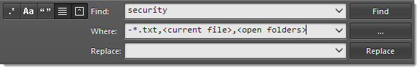

Table of Contents¶
Backers 2014¶
Content¶
About This Documentation¶
Welcome to the unofficial documentation for the Sublime Text editor!

Sublime Text is a versatile and fun text editor for code and prose that automates repetitive tasks so you can focus the important stuff. It works on OS X, Windows and Linux.
If you’re starting out with Sublime Text, read the Basic Concepts section first.
Happy learning!
Contributing to the Documentation¶
If you want to contribute to this documentation, head over to the GitHub repo. This guide has been created with Sphinx.
Installation¶
Make sure to read the conditions for use on the official site. Sublime Text is not free.
The process of installing Sublime Text is different for each platform.
32 bits or 64 bits?¶
OS X¶
You can ignore this section: there is only one version of Sublime Text for OS X.
Windows¶
You should be able to run the 64-bit version if you are using a modern version Windows. If you are having trouble running the 64-bit version, try the 32-bit version.
Windows¶
Portable or Not Portable?¶
Sublime Text comes in two flavors for Windows: normal, and portable. Most users should be better served by a normal installation. Use the portable version only if you know you need it.
Normal installations separate data between two folders: the installation folder proper, and the data directory (user-specific directory for data; explained later in this guide). Normal installations also integrate Sublime Text with File Explorer.
Portable installations keep all files needed by Sublime Text in a single folder. This folder can be moved around and the editor will still work.
How to Install the Normal Version of Sublime Text¶
- Download the installer
- Double click on the installer
How to Install the Portable Version of Sublime Text¶
- Download the compressed files
- Unzip them to a folder of your choice
You will find the sublime_text.exe executable inside that folder.
OS X¶
- Download .dmg file
- Open .dmg file
- Drag the Sublime Text 3 bundle into the Applications folder
To create a symbolic link to use at the command line issue the following command at the terminal:
ln -s "/Applications/Sublime Text.app/Contents/SharedSupport/bin/subl" /usr/local/bin/subl
Linux¶
You can download the package and uncompress it manually. Alternatively, you can use the command line.
Ubuntu¶
For i386
cd ~
wget http://c758482.r82.cf2.rackcdn.com/sublime-text_build-3083_i386.deb
For x64
cd ~
wget http://c758482.r82.cf2.rackcdn.com/sublime-text_build-3083_amd64.deb
Other Linux Distributions¶
For i386
cd ~
wget http://c758482.r82.cf2.rackcdn.com/sublime_text_3_build_3083_x32.tar.bz2
tar vxjf sublime_text_3_build_3083_x32.tar.bz2
For x64
cd ~
wget http://c758482.r82.cf2.rackcdn.com/sublime_text_3_build_3083_x64.tar.bz2
tar vxjf sublime_text_3_build_3083_x64.tar.bz2
Now we should move the uncompressed files to an appropriate location.
sudo mv Sublime\ Text\ 3 /opt/
Lastly, we create a symbolic link to use at the command line.
sudo ln -s /opt/Sublime\ Text\ 3/sublime_text /usr/bin/sublime
In Ubuntu, if you also want to add Sublime Text to the Unity luncher, read on.
First we need to create a new file.
sudo sublime /usr/share/applications/sublime.desktop
Then copy the following into it.
[Desktop Entry]
Version=1.0
Name=Sublime Text 3
# Only KDE 4 seems to use GenericName, so we reuse the KDE strings.
# From Ubuntu's language-pack-kde-XX-base packages, version 9.04-20090413.
GenericName=Text Editor
Exec=sublime
Terminal=false
Icon=/opt/Sublime Text 3/Icon/48x48/sublime_text.png
Type=Application
Categories=TextEditor;IDE;Development
X-Ayatana-Desktop-Shortcuts=NewWindow
[NewWindow Shortcut Group]
Name=New Window
Exec=sublime -n
TargetEnvironment=Unity
If you’ve registered your copy of Sublime Text, but every time you open it you’re asked to enter your license, you should try running this command.
sudo chown -R username:username /home/username/.config /sublime-text-3
Just replace username with your account’s username. This should fix the permission error in the case that you opened up Sublime Text as root when you first entered the license.
Release Channels¶
At the time of this writing, two major versions of Sublime Text exist: Sublime Text 2 and Sublime Text 3. Generally speaking, Sublime Text 3 is the better choice. Even though it’s technically in beta, it’s as stable as Sublime Text 2 and has more features.
Use Sublime Text 2 only if you have found issues running Sublime Text 3 or you depend on any package not available for Sublime Text 3.
Getting Sublime Text 3¶
Sublime Text 3 currently has two release channels:
Beta releases are better tested and more reliable for everyday use than development builds. The majority of users should only use beta releases.
The dev channel is unstable: dev builds may contain bugs and not work reliably. Dev builds are updated more often than beta releases.
Dev builds are only available to registered users.
Basic Concepts¶
Overview¶
To fully understand the rest of this guide, you need to be familiar with the concepts presented in this section.
General Conventions¶
This guide is written from the perspective of a Windows user. Most instructions will only require trivial changes to work on other platforms.
Unless otherwise noted,
relative paths (for example, Packages/User)
start at the Data Directory.
We assume default key bindings when indicating keyboard shortcuts. If you are using a non-US-English keyboard layout, some key bindings may not match your layout. This is due to the way Sublime Text processes key strokes internally.
Mastering Sublime Text Takes Time¶
Mastering Sublime Text requires time and practice. Luckily, it’s built around a handful of concepts that make for a consistent system once all the pieces come together.
This guide will teach you how to use and configure Sublime Text.
Sublime Text is a versatile editor for programmers, but you don’t need to be one in order to use it, and you don’t need to configure it extensively to be productive—it’s an efficient tool out of the box. Hackers, however, will appreciate all the customization and extensibility opportunities.
In the following paragraphs, we’ll outline key aspects that you’ll get familiar with after you’ve spent some time using the editor.
The Data Directory¶
Nearly all of the interesting files for users live under the data directory. The data directory is a platform-dependent location:
- Windows:
%APPDATA%\Sublime Text 3 - OS X:
~/Library/Application Support/Sublime Text 3 - Linux:
~/.config/sublime-text-3
If you’re using the portable version (Windows only),
look for Application/Data.
Here, Application
refers to the directory
to which you’ve extracted
the compressed portable files
and where the executable resides.
Note that the Data directory
only exists with that name
in the portable version.
In full installations,
it is one of the locations
indicated above.
The Packages Directory¶
This is a key directory located under the data directory. All resources for supported programming and markup languages are stored here.
(More on packages and resources later.)
You can access the packages directory
from the main menu (Preferences → Browse Packages...),
by means of an API call (sublime.packages_path()),
and by other means
that will be explained in later topics.
In this guide, we refer to the packages folder as Packages, packages path, packages folder or packages directory.
The User Package¶
Packages/User is a catch-all directory
for custom plugins, snippets, macros, etc.
Consider it your personal area
in the packages folder.
Additionally, it will contain
most of your personal application or plugin settings.
Updates to Sublime Text will never
overwrite the contents of Packages/User.
Sublime Text is Programmable¶
This information is useful for programmers. Other users just need to know that Sublime Text enables users with programming skills to add their own features to the editor.
Sublime Text exposes its internals via an Application Programming Interface (API) that programmers can interact with using the Python programming language. An embedded Python interpreter is included in the editor. The embedded interpreter is useful to inspect the editor’s settings and to quickly test API calls while developing plugins.
Sublime Text and plugins output information
to a console.
To open the console,
press Ctrl+`
or select View → Show Console
from the main menu.
Here’s the Python console in Sublime Text:
Your System’s Python vs the Sublime Text 3 Embedded Python¶
Sublime Text 3 comes with its own Python interpreter that’s separate from your system’s Python interpreter (if available).
The embedded interpreter is only intended to interact with the plugin API, not for general development.
Packages, Plugins, Resources and Other Terms¶
Almost every aspect of Sublime Text can be extended or customized. You can modify the editor’s behavior, add macros and snippets, extend menus and much more. You can even create whole new features using the editor’s API to build complex plugins.
Sublime Text’s vast flexibility is the reason why you will learn about so many configuration files: there simply must be a place to specify all available preferences and settings.
Configuration files in Sublime Text are text files that conform to a predefined structure or format: JSON predominates, but you’ll find XML files too. For the more advanced extensibility options, Python source code files are used.
In this guide, for brevity, we sometimes refer collectively to all these disparate configuration files as resources.
Sublime Text will look for resources inside the packages folder. We’ll talk at length about packages later, but the short version is that, to keep things tidy, Sublime Text has a notion of a package, that is, a folder (or zip archive) that contains resources that belong together (maybe they help compose emails faster, write HTML efficiently, enhance the coding experience for C, Ruby, Go...).
Textmate Compatibility¶
This information is useful for Textmate users who are now using Sublime Text.
Textmate is an editor for the Mac.
Sublime Text compatibility with Textmate bundles is good excluding commands, which are incompatible. Additionally, Sublime Text requires all syntax definitions to have the .tmLanguage extension, and all preferences files to have the .tmPreferences extension. In particular, this means that .plist files will be ignored, even if they are located under a Syntaxes or Preferences subdirectory.
vi/Vim Emulation¶
This information is useful for Vim users who are now using Sublime Text.
vi is an ancient modal editor that lets the user perform all operations from the keyboard. Vim, a modern version of vi, is still in widespread use.
Sublime Text provides vi emulation through the Vintage package. The Vintage package is ignored by default. Learn more about Vintage in the official documentation.
An evolution of Vintage, called Vintageous, offers a better vi/Vim editing experience and is updated more often than Vintage. Vintageous is an open source project.
emacs Emulation¶
This information is useful for emacs users who are now using Sublime Text.
emacs is another popular editor for programmers.
Sublime Text does not offer any built-in emacs emulation, but you can try third-party packages created by other Sublime Text users.
Editing¶
Overview¶
Sublime Text is brim-full of editing features. This topic just scratches the surface of what’s possible.
Multiple Selections¶
Multiple selections let you make sweeping changes to your text efficiently. Any praise about multiple selections is an understatement. This is why:
Select some text and press Ctrl + D to add more instances. If
you want to skip the current instance, press Ctrl + K, Ctrl + D.
If you go too far, press Ctrl + U to deselect the current instance.
Transforming Multiple Selections into Lines¶
Ctrl + L expands the selections to the end of the line. Ctrl + Shift + L
splits the selections into lines.
You can copy multiple selected lines to a separate buffer, edit them there, select the content again as multiple lines and then paste them back into place in the first buffer.
Column Selection¶
You can select a rectangular area of a file. Column selection makes use of multiple selections.
It’s possible to add blocks of text to or remove them from the selection.
Using the Mouse¶
Windows
| Select Block | Right Mouse Button + ⇧ |
| Add to Selection | Ctrl + Right Mouse Button + ⇧ |
| Remove from Selection | Alt + Right Mouse Button + ⇧ |
Linux
| Select Block | Right Mouse Button + ⇧ |
| Add to Selection | Ctrl + Right Mouse Button + ⇧ |
| Remove from Selection | Alt + Right Mouse Button + ⇧ |
OS X
| Select Block | Right Mouse Button + ⌥ |
| Add to Selection | ⌘ + Right Mouse Button + ⇧ |
| Remove from Selection | ⌘ + ⇧ + Right Mouse Button + ⇧ |
Using the Keyboard¶
| Windows | Ctrl + Alt + Up and Ctrl + Alt + Down |
| Linux | Alt + ⇧ + Up and Alt + ⇧ + Down |
| OS X | ⌃ + ⇧ + Up and ⌃ + ⇧ + Down |
Other Ways of Selecting Text¶
The list is long; all available options can be found under Selection. To name a few:
- Select subwords (
Alt + Shift + <arrow>) - Expand selection to brackets (
Ctrl + Shift + M) - Expand selection to indentation (
Ctrl + Shift + J) - Expand selection to scope (
Ctrl + Shift + Space)
Transposing Things¶
Need to swap two letters or, better yet, two words? Experiment with
Ctrl + T.
And much, much more...¶
The Edit, Selection, Find and Goto menus are good places to look for handy editing tools. You might end up using just a few of them, but the rest will still be there for when you need them.
Search and Replace¶
Sublime Text features two main types of search:
Search and Replace – Single File¶
Searching¶
Keyboard shortcuts related to the search panel:
| Open search panel | Ctrl + F |
| Toggle regular expressions | Alt + R |
| Toggle case sensitivity | Alt + C |
| Toggle exact match | Alt + W |
| Find next | Enter |
| Find previous | Shift + Enter |
| Find all | Alt + Enter |
Incremental Search¶
Keyboard shortcuts related to the incremental search panel:
| Open incremental search panel | Ctrl + I |
| Toggle regular expressions | Alt + R |
| Toggle case sensitivity | Alt + C |
| Toggle exact match | Alt + W |
| Find next | Enter |
| Find previous | Shift + Enter |
| Find all | Alt + Enter |
The only difference between this panel
and the regular search panel
lies in the behavior of the Enter key.
In incremental searches,
it will select the next match in the file
and dismiss the search panel for you.
Choosing between this panel or the regular search panel
is a matter of preference.
Replacing Text¶
Keyboard shortcuts related to the replace panel:
| Open replace panel | Ctrl + H |
| Replace next | Ctrl + Shift + H |
| Replace all | Ctrl + Alt + Enter |
Tips¶
Other Ways of Searching in Files¶
Goto Anything
provides the operator #
to search in the active file.
Multiline Search¶
You can type in multiline search patterns
into search panels.
To enter newline characters,
press Ctrl + Enter.
Note that search panels are resizable too.
Search and Replace — Multiple Files¶
Searching¶
Keyboard shortcuts related to Find in Files:
| Open Find in Files | Ctrl + Shift + F |
| Toggle regular expressions | Alt + R |
| Toggle case sensitivity | Alt + C |
| Toggle exact matches | Alt + W |
| Find next | Enter |
Search Scope¶
The Where field in Find in Files limits the search scope. You can define scopes in several ways:
- Adding individual directories (Unix-style paths, even on Windows)
- Adding/excluding files based on wildcards
- Adding symbolic locations (
<open folders>,<open files>...)
It is also possible to combine these filters using commas; for example:
Press the ... button in the search panel to display a menu containing scope options.
Results Format¶
In the search panel, you can customize how results are displayed. These are the available options:
- Show in separate view
- Show context

Both support regular expressions, a powerful tool for searching and replacing text.
Regular Expressions¶
Regular Expressions find complex patterns in text. To take full advantage of the search and replace facilities in Sublime Text, you should at least learn the basics of regular expressions. In this guide we won’t explain how to use regular expressions.
The term regular expression is usually shortened to regexp or regex.
This is how a regex might look:
(?:Sw|P)i(?:tch|s{2})\s(?:it\s)?of{2}!
To use regular expressions in Sublime Text, you first need to activate them in the various search panels. Otherwise, search terms will be interpreted literally.
Sublime Text uses the Perl Compatible Regular Expressions (PCRE) engine from the Boost library.
See also
- Boost library documentation for regular expressions
- Documentation on regular expressions.
- Boost library documentation for format strings
- Documentation on format strings. Note that Sublime Text additionally
interprets
\nas$n.
Build Systems (Batch Processing)¶
See also
- Reference for build systems
- Complete documentation on all available options, variables, etc.
Warning
Build system selection is currently undergoing a rework in the dev channel. The following information may be outdated.
See this forum thread for details.
Build systems let you run your files through external programs like make, tidy, interpreters, etc.
Executables called from build systems
must be in your PATH.
For more information about making sure
the PATH seen by Sublime Text
is set correctly, see Troubleshooting Build Systems.
File Format¶
Build systems are JSON files
and have the extension .sublime-build.
Example¶
Here’s an example of a build system:
{
"cmd": ["python", "-u", "$file"],
"file_regex": "^[ ]*File \"(...*?)\", line ([0-9]*)",
"selector": "source.python"
}
cmdRequired. This option contains the actual command line to be executed:
python -u /path/to/current/file.ext
file_regex- A Perl-style regular expression
to capture error information
from an external program’s output.
This information is used
to help you navigate through error instances with
F4. selector- If the Tools | Build System | Automatic option is set,
Sublime Text will automatically find
the corresponding build system for the active file
by matching
selectorto the file’s scope.
In addition to options,
you can use some variables in build systems too,
as we have done above with $file,
which expands to the active buffer’s filename.
Where to Store Build Systems¶
Build systems must be located somewhere
under the Packages folder
(e.g. Packages/User).
Many packages include their own build systems.
Running Build Systems¶
Build systems can be run by pressing F7
or from Tools → Build.
File Navigation and File Management¶
Sublime Text includes a variety of features to help you keep your work organized and find your way around your projects.
Goto Anything¶
Use Goto Anything to navigate your project’s files swiftly. (More about projects later.)

Keyboard shortcuts related to Goto Anything:
| Open Goto Anything | Ctrl + P |
| Pin current item and close Goto Anything | Enter |
| Pin current item | → |
| Close Goto Anything | Esc |
As you type into Goto Anything’s input area, names of files in the current project will be searched, and a preview of the best match will be shown. This preview is transient; that is, it won’t become the actual active view until you perform some operation on it. You will find transient views in other situations, for example, after clicking on a file in the sidebar.
Goto Anything lives up to its name –there’s more to it than locating files.
Goto Anything Operators¶
Goto Anything accepts several operators. All of them can be used on their own or after the search term.
Example:
models:100
This instructs Sublime Text
to first search for a file
whose path matches models,
and then to go to line 100 in said file.
Supported Operators¶
@symbolSearches the active file for the symbol named
symbol.Note
Symbols usually include class and function names.
Symbol searches will only yield results if the active file type has symbols defined for it. Symbols are defined in
.tmLanguagefiles. For more information about symbols, see Symbols.
#term- Performs a fuzzy search of the
termsearch term and highlights all matches. :line_number- Goes to the specified
line_number, or to the end of the file ifline_numberis larger that the file’s line count.
The Goto Anything operators are bound to the following shortcuts:
| @ | Ctrl + R |
| # | Ctrl + ; |
| : | Ctrl + G |
Sidebar¶
The sidebar provides an overview of the active project (more on projects later). Files and folders in the sidebar will be available in Goto Anything and project-wide actions like, for example, project-wide searches.
Projects and the sidebar are closely related. It’s important to note that there’s always an active project, whether it’s explicit or implicit.
The sidebar provides basic file management operations through its context menu.
These are common keyboard shortcuts related to the side bar:
| Toggle side bar | Ctrl + K, Ctrl + B |
| Give the focus to the side bar | Ctrl + 0 |
| Return the focus to the view | Esc |
| Navigate side bar | Arrow keys |
Files opened from the sidebar create semi-transient views. Unlike transient views, semi-transient views show up as a new tab. The tab title of semi-transient views appears in italics. Before a new semi-transient view is opened, any other pre-existing semi-transient view in the same pane gets automatically closed.
Here’s an example showing a normal view, a transient view, and a semi-transient view. Notice that the transient view has no tab:

Projects¶
Projects group sets of files and folders to keep your work organized.
There is always an active project. If you haven’t created one, an implicit one is created by Sublime Text.
Set up a project in a way that suits you by adding folders, and then save your new configuration.
You can add and remove folders to/from a project using the Project menu or the side bar’s context menu. If you drag a folder onto a Sublime Text window, it will be added to the project too.
To save a project, go to Project → Save Project As....
Using the menu, you can switch projects by selecting Projects → Recent Projects.
Keyboard shortcuts related to projects:
| Switch project | Ctrl + Alt + P |
Project metadata is stored in JSON files
with a .sublime-project extension.
Wherever there’s a .sublime-project file,
you will find an ancillary .sublime-workspace file too.
The second one is used by Sublime Text
and you shouldn’t edit it.
(More on workspaces later.)
Projects can define settings applicable to that project only. See the official documentation for more information.
You can open a project from the command line
by passing the .sublime-project file as an argument
to the subl command line helper
included with Sublime Text.
Warning
Generally speaking,
it’s fine to commit .sublime-project files
to a source code repository,
but always be mindful of what you store in them.
The .sublime-project Format¶
Project metadata in .sublime-project files
is split across three topmost sections:
folders, for the included folders; settings,
for project-specific settings;
and build_systems, for project-specific build systems.
{
"folders":
[
{
"path": "src",
"folder_exclude_patterns": ["backup"]
},
{
"path": "docs",
"name": "Documentation",
"file_exclude_patterns": ["*.css"]
}
],
"settings":
{
"tab_size": 8
},
"build_systems":
[
{
"name": "List",
"cmd": ["ls"]
}
]
}
Folder Options
path- Required. The path may be relative to the project directory, or absolute.
name- Optional. If present, it will appear in the side bar.
folder_exclude_patterns- Optional. List of wildcards. Folders matching the wildcards will be excluded from the project.
folder_include_patterns- Optional. List of wildcards. Folders matching the wildcards will be included in the project.
file_exclude_patterns- Optional. List of wildcards. Files matching the wildcards will be excluded from the project.
file_include_patterns- Optional. List of wildcards. Files matching the wildcards will be included in the project.
- Settings
A project may define project-specific settings that will only apply to files within that project. Project-specific settings override user settings, but not syntax-specific settings.
Almost all settings can be overridden (excluding global settings).
See also
- The Settings Hierarchy
- A detailed example for the order of precedence for settings.
- Settings - Reference
- Reference of available settings.
- Build Systems
You can define project-specific build systems in a
.sublime-projectfile. Anamemust be specified for each one. Build systems included in a.sublime-projectfile will show up in the Tools → Build Systems menu.See also
- Build Systems - Reference
- Documentation on build systems and their options.
Workspaces¶
Workspaces can be seen as different views into the same project. For example, you may want to have only a few selected files open while working on some feature. Or perhaps you use a different pane layout when you’re writing tests, etc. Workspaces help in these situations.
Workspaces behave very much like projects. To create a new workspace, select Project → New Workspace for Project. To save the active workspace, select Project → Save Workspace As....
To switch between different workspaces,
use Ctrl+Alt+P,
exactly as you do with projects.
Workspaces metadata is stored in JSON files
with the .sublime-workspace extension.
As with projects, you can open a workspace
from the command line
by passing the desired .sublime-workspace file
as an argument to the subl command line helper
included with Sublime Text.
Warning
Unlike .sublime-project files,
.sublime-workspace files
are not meant to be shared or edited manually.
You should never commit .sublime-workspace files
into a source code repository.
Customizing Sublime Text¶
Sublime Text can be fully customized. In the following topics, we outline the most common options. In particular, we don’t cover themes, an immensely configurable area of Sublime Text.
Settings¶
Sublime Text stores configuration data in .sublime-settings files. Flexibility comes at the price of a slightly complex system for applying settings. However, here’s a rule of thumb:
Always place your personal settings files under Packages/User to guarantee they will take precedence over any other conflicting settings files.
With that out of the way, let’s unveil, to please masochistic readers, the mysteries of how settings work.
Format¶
Settings files use JSON and have the .sublime-settings extension.
Types of Settings¶
The name of each .sublime-settings file determines its purpose. Names
can be descriptive (like Preferences (Windows).sublime-settings or
Minimap.sublime-settings), or they can be related to what the settings
file is controlling. For example, file type settings need to carry the name of
the .tmLanguage syntax definition for the file type. Thus, for the .py file
type, whose syntax definition is contained in Python.tmLanguage, the
corresponding settings files would be called Python.sublime-settings.
Also, some settings files only apply to specific platforms. This can be
inferred from the file names, e.g.
Preferences (platform).sublime-settings. Valid names for platform
are Windows, Linux, OSX.
This is important: Platform-specific settings files in the
Packages/User folder are ignored. This way, you can be sure a single
settings file overrides all the others.
Settings changes are usually updated in real time, but you may have to restart Sublime Text in order to load new settings files.
How to Access and Edit Common Settings Files¶
Unless you need very fine-grained control over settings, you can access the main configuration files through the Preferences | Settings - User and Preferences | Settings - More menu items. Editing Preferences | Settings - Default is discouraged, because changes will be reverted with every update to the software. However, you can use that file for reference: it contains comments explaining the purpose of all available global and file type settings.
Order of Precedence of .sublime-settings Files¶
The same settings file (such as Python.sublime-settings) can appear in
multiple places. All settings defined in identically named files will be merged
together and overwritten according to predefined rules. See
Merging and Order of Precedence for more information.
Let us remember again that any given settings file in Packages/User
ultimately overrides every other settings file of the same name.
In addition to settings files, Sublime Text maintains session data—settings for the particular set of files being currently edited. Session data is updated as you work on files, so if you adjust settings for a particular file in any way (mainly through API calls), they will be recorded in the session and will take precedence over any applicable .sublime-settings files.
To check the value of a setting for a particular file being edited, use
view.settings().get("setting_name") from the console.
Finally, it’s also worth noting that some settings may be automatically adjusted
for you. Keep this in mind if you’re puzzled about some setting’s value. For
instance, this is the case for certain whitespace-related settings and the
syntax setting.
Below, you can see the order in which Sublime Text would process a hypothetical hierarchy of settings for Python files on Windows:
- Packages/Default/Preferences.sublime-settings
- Packages/Default/Preferences (Windows).sublime-settings
- Packages/User/Preferences.sublime-settings
- Packages/Python/Python.sublime-settings
- Packages/User/Python.sublime-settings
- Session data for the current file
- Auto adjusted settings
See The Settings Hierarchy for a full example of the order of precedence.
Global Editor Settings and Global File Settings¶
These settings are stored in Preferences.sublime-settings and
Preferences (platform).sublime-settings files. The defaults can be
found in Packages/Default.
Valid names for platform are Windows, Linux, OSX.
File Type Settings¶
If you want to target a specific file type, name the .sublime-settings file
after the file type’s syntax definition. For example, if our syntax definition
+was called Python.tmLanguage, we’d need to call our settings file
Python.sublime-settings.
Settings files for specific file types usually live in packages, like +:file:Packages/Python, but there can be multiple settings files in separate locations for the same file type.
Similarly to global settings, one can establish platform-specific settings for
file types. For example, Python (Linux).sublime-settings would only be
consulted only under Linux.
Also, let us emphasize that under Pakages/User only
Python.sublime-settings would be read, but not any
Python (platform).sublime-settings variant.
Regardless of its location, any file-type-specific settings file has precedence over a global settings file affecting file types.
The Settings Hierarchy¶
Below, you can see the order in which Sublime Text would process a hypothetical hierarchy of settings for Python files on Windows:
Packages/Default/Preferences.sublime-settingsPackages/Default/Preferences (Windows).sublime-settingsPackages/AnyOtherPackage/Preferences.sublime-settingsPackages/AnyOtherPackage/Preferences (Windows).sublime-settingsPackages/User/Preferences.sublime-settings- Settings from the current project
Packages/Python/Python.sublime-settingsPackages/Python/Python (Windows).sublime-settingsPackages/User/Python.sublime-settings- Session data for the current file
- Auto-adjusted settings
Where to Store User Settings (Once Again)¶
Whenever you want to save settings, especially if they should be preserved
between software updates, place the corresponding .sublime-settings file in
Packages/User.
Indentation¶
See also
- Indentation
- Official Sublime Text Documentation.
Key Bindings¶
See also
- Reference for key bindings
- Complete documentation on key bindings.
Key bindings let you map sequences of key presses to commands.
File Format¶
Key bindings are defined in JSON
and stored in .sublime-keymap files.
In the same package, separate keymap files for Linux, OSX and Windows may exist for better OS integration.
Example¶
[
{ "keys": ["ctrl+shift+n"], "command": "new_window" },
{ "keys": ["ctrl+o"], "command": "prompt_open_file" }
]
Defining and Overriding Key Bindings¶
Sublime Text ships with default key bindings
(for example, Packages/Default/Default (Windows).sublime-keymap).
In order to override default key bindings
or add new ones,
use a separate keymap file
with higher precedence:
for example, Packages/User/Default (Windows).sublime-keymap.
See Merging and Order of Precedence for more information.
Advanced Key Bindings¶
Simple key bindings consist of a sequence of one or more keys mapped to a command. However, there are more complex syntaxes for passing arguments to commands and restricting key bindings to specific contexts.
Passing Arguments¶
Use the args key
to specify arguments:
{ "keys": ["shift+enter"], "command": "insert", "args": {"characters": "\n"} }
Here, \n is passed to the insert command
whenever Shift+Enter is pressed.
Contexts¶
Contexts determine whether a given key binding is enabled based on the caret’s position or some other state.
{ "keys": ["escape"], "command": "clear_fields", "context":
[
{ "key": "has_next_field", "operator": "equal", "operand": true }
]
}
This key binding translates to
clear snippet fields and resume normal editing
if there is a next snippet field available.
Thus, pressing ESC will only
trigger this key binding
if you are cycling through snippet fields.
The same key binding may be mapped to multiple contexts, so a single sequence of key presses may produce different results at different times.
Key Chords¶
You can create key bindings composed of multiple keys.
{ "keys": ["ctrl+k", "ctrl+v"], "command": "paste_from_history" }
Here, to trigger the command paste_from_history,
you have to press Ctrl + K first,
then release K,
and finally press V.
Note: This example is a default key binding, so you can try it at any time.
Color Schemes¶
Sublime Text uses color schemes to highlight source code and to define the colors of some items in the editing area: background, foreground, gutter, caret, selection...
Color schemes are fully customizable.
Let’s look at a Python file as Sublime Text highlights it using the default color scheme:
See also
- Reference for color schemes
- Complete reference on color scheme settings.
Extending Sublime Text¶
The following topics show various ways in which Sublime Text can be extended with additional functionality.
Commands¶
Commands are ubiquitous in Sublime Text: key bindings, menu items and macros all work through the command system. They are found in other places too.
Some commands are implemented in the editor’s core, but many of them are provided as Python plugins. Every command can be called from a Python plugin.
Command Dispatching¶
Normally, commands are bound to the application object, a window object or a view object. Window objects, however, will dispatch commands based on input focus, so you can issue a view command from a window object and the correct view instance will be found for you.
Anatomy of a Command¶
Commands have a name separated by underscores (snake_case) like hot_exit, and can take
a dictionary of arguments whose keys must be strings and whose values must
be JSON types. Here are a few examples of commands run from the Python console:
view.run_command("goto_line", {"line": 10})
view.run_command('insert_snippet', {"contents": "<$SELECTION>"})
view.window().run_command("prompt_select_project")
See also
- Reference for commands
- Command reference.
Macros¶
Macros are a basic automation facility comprising sequences of commands. Use them whenever you need to repeat the exact same steps to perform an operation.
Macro files are JSON files with the extension .sublime-macro. Sublime Text
ships with a few macros providing core functionality, such as line and word
deletion. You can find these under Tools | Macros or in
+:file:Packages/Default.
How to Record Macros¶
To start recording a macro, press Ctrl+q and subsequently execute the
desired steps one by one. When you’re done, press Ctrl+q again to stop
the macro recorder. Your new macro won’t be saved to a file, but kept in the
macro buffer instead. Now you will be able to run the recorded macro by
pressing Ctrl+Shift+q, or save it to a file by selecting
Tools | Save macro...
Note that the macro buffer will remember only the latest recorded macro. Also, macros only record commands sent to the buffer: window-level commands, such creating a new file, will be ignored.
How to Edit Macros¶
As an alternative to recording a macro, you can edit it by hand. Just save a new file
with the .sublime-macro extension under Packages/User and add
commands to it. Macro files have this format:
[
{"command": "move_to", "args": {"to": "hardeol"}},
{"command": "insert", "args": {"characters": "\n"}}
]
See the Commands section for more information on commands.
If you’re editing a macro by hand, you need to escape quotation marks,
blank spaces and backslashes by preceding them with \.
Where to Store Macros¶
Macro files can be stored in any package folder, and then will show up under Tools | Macros | <PackageName>.
Key Binding for Macros¶
Macro files can be bound to key combinations by passing the macro file path to the run_macro_file command like so:
{"keys": ["super+alt+l"], "command": "run_macro_file", "args": {"file": "res://Packages/User/Example.sublime-macro"}}
Snippets¶
Whether you are coding or writing the next vampire best-seller, you’re likely to need certain short fragments of text again and again. Use snippets to save yourself tedious typing. Snippets are smart templates that will insert text for you and adapt it to their context.
To create a new snippet, select Tools | New Snippet... Sublime Text will present you with a skeleton for it.
Snippets can be stored under any package’s folder, but to keep it simple while
you’re learning, you can save them to your Packages/User folder.
Snippets File Format¶
Snippets typically live in a Sublime Text package. They are simplified XML files
with the extension .sublime-snippet. For instance, you could have a
greeting.sublime-snippet inside an Email package.
The structure of a typical snippet is as follows (including the default hints Sublime Text inserts for your convenience):
<snippet>
<content><![CDATA[Type your snippet here]]></content>
<!-- Optional: Tab trigger to activate the snippet -->
<tabTrigger>xyzzy</tabTrigger>
<!-- Optional: Scope the tab trigger will be active in -->
<scope>source.python</scope>
<!-- Optional: Description to show in the menu -->
<description>My Fancy Snippet</description>
</snippet>
The snippet element contains all the information Sublime Text needs in order
to know what to insert, whether to insert and when. Let’s look at each of
these parts in turn.
contentThe actual snippet. Snippets can range from simple to fairly complex templates. We’ll look at examples of both later.
Keep the following in mind when writing your own snippets:
- If you want to get a literal
$, you have to escape it like this:\$. - When writing a snippet that contains indentation, always use tabs.
When the snippet is inserted, the tabs will be transformed into spaces
if the option
translateTabsToSpacesistrue. - The
contentmust be included in a<![CDATA[…]]>section. Snippets won’t work if you don’t do this! - The
contentof your snippet must not contain]]>because this string of characters will prematurely close the<![CDATA[…]]>section, resulting in an XML error. To work around this pitfall, you can insert an undefined variable into the string like this:]]$NOT_DEFINED>. This modified string passes through the XML parser without closing the content element’s<![CDATA[…]]>section, but Sublime Text will replace$NOT_DEFINEDwith an empty string before inserting the snippet into your file. In other words,]]$NOT_DEFINED>in your snippet filecontentwill be written as]]>when you trigger the snippet.
- If you want to get a literal
tabTriggerDefines the sequence of keys that must be pressed to insert this snippet. After typing this sequence, the snippet will kick in as soon as you hit the
Tabkey.A tab trigger is an implicit key binding.
scope- Scope selector determining the context where the snippet will be active. See Scopes for more information.
description- Used when showing the snippet in the Snippets menu. If not present, Sublime Text defaults to the file name of the snippet.
With this information, you can start writing your own snippets as described in the next sections.
Note
In the interest of brevity, we’re only including the content
element’s text in examples unless otherwise noted.
Snippet Features¶
Environment Variables¶
Snippets have access to contextual information in the form of environment variables. The values of the variables listed below are set automatically by Sublime Text.
You can also add your own variables to provide extra information. These custom
variables are defined in .sublime-options files.
| $PARAM1 .. $PARAMn | Arguments passed to the insert_snippet command. (Not covered here.) |
| $SELECTION | The text that was selected when the snippet was triggered. |
| $TM_CURRENT_LINE | Content of the cursor’s line when the snippet was triggered. |
| $TM_CURRENT_WORD | Word under the cursor when the snippet was triggered. |
| $TM_FILENAME | Name of the file being edited, including extension. |
| $TM_FILEPATH | Path to the file being edited. |
| $TM_FULLNAME | User’s user name. |
| $TM_LINE_INDEX | Column where the snippet is being inserted, 0 based. |
| $TM_LINE_NUMBER | Row where the snippet is being inserted, 1 based. |
| $TM_SELECTED_TEXT | An alias for $SELECTION. |
| $TM_SOFT_TABS | YES if translate_tabs_to_spaces is true, otherwise NO. |
| $TM_TAB_SIZE | Spaces per-tab (controlled by the tab_size option). |
Let’s see a simple example of a snippet using variables:
=================================
USER NAME: $TM_FULLNAME
FILE NAME: $TM_FILENAME
TAB SIZE: $TM_TAB_SIZE
SOFT TABS: $TM_SOFT_TABS
=================================
# Output:
=============================
USER NAME: guillermo
FILE NAME: test.txt
TAB SIZE: 4
SOFT TABS: YES
=============================
Fields¶
With the help of field markers, you can cycle through positions within the
snippet by pressing the Tab key. Fields are used to walk you through the
customization of a snippet after it’s been inserted.
First Name: $1
Second Name: $2
Address: $3
In the example above, the cursor will jump to $1 if you press Tab
once. If you press Tab a second time, it will advance to $2, etc. You
can also move backwards in the series with Shift+Tab. If you press
Tab after the highest tab stop, Sublime Text will place the cursor at the
end of the snippet’s content so that you can resume normal editing.
If you want to control where the exit point should be, use the $0 mark. By
default, this is the end of the snippet.
You can break out of the field cycle any time by pressing Esc.
Mirrored Fields¶
Identical field markers mirror each other: when you edit the first one, the rest will be populated in real time with the same value.
First Name: $1
Second Name: $2
Address: $3
User name: $1
In this example, “User name” will be filled out with the same value as “First Name”.
Placeholders¶
By expanding the field syntax a little bit, you can define default values for a field. Placeholders are useful whenever there’s a general case for your snippet, but you still want to keep it customizable.
First Name: ${1:Guillermo}
Second Name: ${2:López}
Address: ${3:Main Street 1234}
User name: $1
Variables can be used as placeholders:
First Name: ${1:Guillermo}
Second Name: ${2:López}
Address: ${3:Main Street 1234}
User name: ${4:$TM_FULLNAME}
And you can nest placeholders within other placeholders too:
Test: ${1:Nested ${2:Placeholder}}
Substitutions¶
In addition to the place holder syntax, tab stops can specify more complex operations with substitutions. Use substitutions to dynamically generate text based on a mirrored tab stop. Of course, the tab stop you want to use as variable has to be mirrored somewhere else in the snipept.
The substitution syntax has the following syntaxes:
${var_name/regex/format_string/}${var_name/regex/format_string/options}
- var_name
- The variable name: 1, 2, 3...
- regex
- Perl-style regular expression: See the Boost library documentation for regular expressions.
- format_string
- See the Boost library documentation for format strings.
- options
- Optional. May be any of the following:
- i
- Case-insensitive regex.
- g
- Replace all occurrences of
regex. - m
- Don’t ignore newlines in the string.
With substitutions you can, for instance, underline text effortlessly:
Original: ${1:Hey, Joe!}
Transformation: ${1/./=/g}
# Output:
Original: Hey, Joe!
Transformation: =========
Another more complex example can translate snail_case to Tile Case With Spaces. Basically, it combines two separate expressions and replaces into one. It also illustrates that replaces may occur before the actual tabstop.
Transformation: ${1/^(\w)|(?:_(\w))/(?1\u$1:)(?2 \u$2:)/g}
Original: ${1:text_in_snail_case}
# Output:
Transformation: Text In Snail Case
Original: text_in_snail_case
Completions¶
In the spirit of IDEs, Sublime Text suggests completions that aggregate code or content while writing by catching everything that you have written, like variable names.
There are however several ways to extend the list of completions (for example, depending on the current syntax).
This topic deals with how completions are used and where they come from.
How to Use Completions¶
There are two methods for using completions. Even though, when screening them, the priority given to completions always stays the same, the two methods produce different results.
Completions can be inserted in two ways:
- through the completions list (
Ctrl + Spacebar), or - by pressing
Tab.
The Completions List¶
To use the completions list:
- Press
Ctrl + Spacebaror just type something. - Optionally, press
Ctrl + Spacebaragain to select the next entry or use up and down arrow keys. - Press
EnterorTabto validate selection (depending on theauto_complete_commit_on_tabsetting) - Optionally, press
Tabrepeatedly to insert the next available completion.
Note
If the completions list was opened explicitly,
the current selection
in the completions list
can also be validated
with any punctuation sign
that isn’t itself bound to a snippet (e.g. .).
When the list of completion candidates can be narrowed down to one unambiguous choice given the current prefix, this one completion will be validated automatically the moment you trigger the completion list.
Additionally, you may see a trigger hint on the right side of a completion’s trigger in the completions list. This can be used as a preview of the completion’s content.
The above is in fact a snippet
and expands to
$arrayName = array('' => , );.
Triggers and Contents¶
Completions not sourced from the text in the current file may provide a trigger that is different to the content they will insert if selected. This is commonly used for function completions where the content also includes the function’s signature.
For example,
completing array_map from the PHP completions
will result in array_map(callback, arr1):
You may notice in the animation
that the cursor automatically selected callback.
This is because completions support
the same features as snippets
with fields and placeholders.
For more details, refer to Snippet Features.
Completions with multiple cursors¶
Sublime Text can also handle completions with multiple cursors
but will only open the completion list
when all cursors share the same text
between the current cursor positions
and the last word separator character
(e.g. . or a line break).
Working example (| represents one cursor):
l|
some text with l|
l| and.l|
Not working example:
l|
some text with la|
l| andl|
Selections are essentially ignored,
only the position of the cursor matters.
Thus, e|[-some selection] example,
with | as the cursor and [...] as the current selection,
completes to example|[-some selection] example.
Tab-Completed Completions¶
If you want to be able to tab-complete completions,
the setting tab_completion must be set to true (default).
Snippet tab-completion is unaffected by this setting:
They will always be completed
according to their tab trigger.
With tab_completion enabled,
completion of items is always automatic.
This means, unlike the case of the completions list,
that Sublime Text will always make the decision for you.
The rules for selecting the best completion
are the same as described above,
but in case of ambiguity,
Sublime Text will insert the item it deems most suitable.
You can press the Tab key multiple times
to walk through other available options.
When tab_completion is enabled,
you can press Shift + Tab to insert
a literal tab character.
Sources for Completions and their Priorities¶
These are the sources for completions the user can control, in the order they are prioritized:
- Snippets
- API-injected completions
via
on_query_completions() - Completions files
Additionally, the following completions are folded into the final list:
- Words in the buffer
Snippets will always win when the current prefix matches their tab trigger exactly. For the rest of the completion sources, a fuzzy match is performed. Furthermore, snippets always lose in a fuzzy match.
When a list of completions is shown, snippets will still be listed alongside the other items, even if the prefix only partially matches the snippets’ tab triggers.
Note
Completions sourced from words in the buffer
can be suppressed explicitly
from an on_query_completions event hook.
Command Palette¶
See also
- Reference for Command Palette
- Complete documentation on the command palette options.
Overview¶
The command palette bound to Ctrl+Shift+P is an interactive list
whose purpose is to execute commands. The command palette is fed by entries in
.sublime-commands files. Usually, commands that don’t warrant creating a
key binding of their own are good candidates for inclusion in a .sublime- commands
files.
By default, the command palette includes many useful commands, and provides convenient access to individual settings as well as settings files.
File Format (Commands Files)¶
Commands files use JSON and have the .sublime-commands extension.
Here’s an excerpt from Packages/Default/Default.sublime-commands:
[
{ "caption": "Project: Save As", "command": "save_project_as" },
{ "caption": "Project: Close", "command": "close_project" },
{ "caption": "Project: Add Folder", "command": "prompt_add_folder" },
{ "caption": "Preferences: Default File Settings", "command": "open_file", "args": {"file": "${packages}/Default/Base File.sublime-settings"} },
{ "caption": "Preferences: User File Settings", "command": "open_file", "args": {"file": "${packages}/User/Base File.sublime-settings"} },
{ "caption": "Preferences: Default Global Settings", "command": "open_file", "args": {"file": "${packages}/Default/Global.sublime-settings"} },
{ "caption": "Preferences: User Global Settings", "command": "open_file", "args": {"file": "${packages}/User/Global.sublime-settings"} },
{ "caption": "Preferences: Browse Packages", "command": "open_dir", "args": {"dir": "$packages"} }
]
caption- Text for display in the command palette.
command- Command to be executed.
args- Arguments to pass to
command.
How to Use the Command Palette¶
- Press
Ctrl+Shift+P - Select command
The command palette filters entries by context. This means that whenever you open it, you
won’t always see all the commands defined in every .sublime-commands file.
Syntax Definitions¶
Syntax definitions make Sublime Text aware of programming and markup languages. Most noticeably, they work together with colors to provide syntax highlighting. Syntax definitions define scopes that divide the text in a buffer into named regions. Several editing features in Sublime Text make extensive use of this fine-grained contextual information.
Essentially, syntax definitions consist of regular expressions used to find text, as well as more or less arbitrary, dot-separated strings called scopes or scope names. For every occurrence of a given regular expression, Sublime Text gives the matching text its corresponding scope name.
Note
As of Sublime Text Build 3084,
a new syntax definition format has been added,
with the .sublime-syntax extension.
It is currently only available in the Dev channel.
Documentation is available here: http://www.sublimetext.com/docs/3/syntax.html
Prerequisites¶
In order to follow this tutorial, you will need to install AAAPackageDev, a package intended to ease the creation of new syntax definitions for Sublime Text. Follow the installation notes in the “Getting Started” section of the readme.
File format¶
Sublime Text uses property list (Plist) files to store syntax definitions. However, because editing XML files is a cumbersome task, we’ll use YAML instead and convert it to Plist format afterwards. This is where the AAAPackageDev package (mentioned above) comes in.
Note
If you experience unexpected errors during this tutorial, chances are AAAPackageDev or YAML is to blame. Don’t immediately think your problem is due to a bug in Sublime Text.
By all means, do edit the Plist files by hand if you prefer to work in XML, but always keep in mind their differing needs in regards to escape sequences, many XML tags etc.
Scopes¶
Scopes are a key concept in Sublime Text. Essentially, they are named text regions in a buffer. They don’t do anything by themselves, but Sublime Text peeks at them when it needs contextual information.
For instance, when you trigger a snippet, Sublime Text checks the scope bound to the snippet and looks at the caret’s position in the file. If the caret’s current position matches the snippet’s scope selector, Sublime Text fires it off. Otherwise, nothing happens.
Scopes can be nested to allow for a high degree of granularity. You can drill down the hierarchy very much like with CSS selectors. For instance, thanks to scope selectors, you could have a key binding activated only within single quoted strings in Python source code, but not inside single quoted strings in any other language.
Sublime Text inherits the idea of scopes from Textmate, a text editor for Mac. Textmate’s online manual contains further information about scope selectors that’s useful for Sublime Text users too. In particular, Color Schemes make extensive use of scopes to style every aspect of a language in the desired color.
How Syntax Definitions Work¶
At their core, syntax definitions are arrays of regular expressions paired with scope names. Sublime Text will try to match these patterns against a buffer’s text and attach the corresponding scope name to all occurrences. These pairs of regular expressions and scope names are known as rules.
Rules are applied in order, one line at a time. Rules are applied in the following order:
- The rule that matches at the first position in a line
- The rule that comes first in the array
Each rule consumes the matched text region, which therefore will be excluded from the next rule’s matching attempt (save for a few exceptions). In practical terms, this means that you should take care to go from more specific rules to more general ones when you create a new syntax definition. Otherwise, a greedy regular expression might swallow parts you’d like to have styled differently.
Syntax definitions from separate files can be combined, and they can be recursively applied too.
Your First Syntax Definition¶
By way of example, let’s create a syntax definition for Sublime Text snippets.
We’ll be styling the actual snippet content, not the whole .sublime-snippet
file.
Note
Since syntax definitions are primarily used to enable syntax highlighting, we’ll use the phrase to style to mean to break down a source code file into scopes. Keep in mind, however, that colors are a different thing from syntax definitions and that scopes have many more uses besides syntax highlighting.
Here are the elements we want to style in a snippet:
- Variables (
$PARAM1,$USER_NAME...)- Simple fields (
$0,$1...)- Complex fields with placeholders (
${1:Hello})- Nested fields (
${1:Hello ${2:World}!})- Escape sequences (
\\$,\\<...)- Illegal sequences (
$,<...)
Here are the elements we don’t want to style because they are too complex for this example:
- Variable Substitution (
${1/Hello/Hi/g})
Note
Before continuing, make sure you’ve installed the AAAPackageDev package as explained above.
Creating A New Syntax Definition¶
To create a new syntax definition, follow these steps:
- Go to Tools | Packages | Package Development | New Syntax Definition
- Save the new file in your
Packages/Userfolder as a.YAML-tmLanguagefile.
You now should see a file like this:
# [PackageDev] target_format: plist, ext: tmLanguage
---
name: Syntax Name
scopeName: source.syntax_name
fileTypes: []
uuid: 0da65be4-5aac-4b6f-8071-1aadb970b8d9
patterns:
-
...
Let’s examine the key elements.
name- The name that Sublime Text will display in the syntax definition drop-down list. Use a short, descriptive name. Typically, you will use the name of the programming language you are creating the syntax definition for.
scopeName- The topmost scope for this syntax definition. It takes the form
source.<lang_name>ortext.<lang_name>. For programming languages, usesource. For markup and everything else, usetext. fileTypes- This is a list of file extensions (without the leading dot). When opening files of these types, Sublime Text will automatically activate this syntax definition for them.
uuid- This is a unique identifier for this syntax definition. Each new syntax definition gets its own uuid. Even though Sublime Text itself ignores it, don’t modify this.
patterns- A container for your patterns.
For our example, fill the template with the following information:
# [PackageDev] target_format: plist, ext: tmLanguage
---
name: Sublime Snippet (Raw)
scopeName: source.ssraw
fileTypes: [ssraw]
uuid: 0da65be4-5aac-4b6f-8071-1aadb970b8d9
patterns:
-
...
Note
YAML is not a very strict format, but can cause headaches when you don’t know its conventions. It supports single and double quotes, but you may also omit them as long as the content does not create another YAML literal. If the conversion to Plist fails, take a look at the output panel for more information on the error. We’ll explain later how to convert a syntax definition in YAML to Plist. This will also cover the first commented line in the template.
The --- and ... are optional.
Analyzing Patterns¶
The patterns array can contain several types of element. We’ll look at some
of them in the following sections. If you want to learn more about patterns,
refer to Textmate’s online manual.
Matches¶
Matches take this form:
match: (?i:m)y \s+[Rr]egex
name: string.format
comment: This comment is optional.
match- A regular expression Sublime Text will use to find matches.
name- The name of the scope that should be applied to any occurrences of
match. comment- An optional comment about this pattern.
Let’s go back to our example. It looks like this:
# [PackageDev] target_format: plist, ext: tmLanguage
---
name: Sublime Snippet (Raw)
scopeName: source.ssraw
fileTypes: [ssraw]
uuid: 0da65be4-5aac-4b6f-8071-1aadb970b8d9
patterns:
-
...
That is, make sure the patterns array is empty.
Now we can begin to add our rules for Sublime snippets. Let’s start with simple fields. These could be matched with a regex like so:
\$[0-9]+
# or...
\$\d+
We can then build our pattern like this:
name: keyword.other.ssraw
match: \$\d+
comment: Tab stops like $1, $2...
And we can add it to our syntax definition too:
# [PackageDev] target_format: plist, ext: tmLanguage
---
name: Sublime Snippet (Raw)
scopeName: source.ssraw
fileTypes: [ssraw]
uuid: 0da65be4-5aac-4b6f-8071-1aadb970b8d9
patterns:
- comment: Tab stops like $1, $2...
name: keyword.other.ssraw
match: \$\d+
...
Note
You should use two spaces for indent. This is the recommended indent for YAML and lines up with lists like shown above.
We’re now ready to convert our file to .tmLanguage. Syntax definitions use
Textmate’s .tmLanguage extension for compatibility reasons. As explained
above, they are simply Plist XML files.
Follow these steps to perform the conversion:
- Make sure that
Automaticis selected in Tools | Build System, or selectConvert to ...- Press
F7- A
.tmLanguagefile will be generated for you in the same folder as your.YAML-tmLanguagefile- Sublime Text will reload the changes to the syntax definition
In case you are wondering why AAAPackageDev knows what you want to convert your file to: It’s specified in the first comment line.
You have now created your first syntax definition. Next, open a new file and
save it with the extension .ssraw. The buffer’s syntax name should switch to
“Sublime Snippet (Raw)” automatically, and you should get syntax highlighting if
you type $1 or any other simple snippet field.
Let’s proceed to creating another rule for environment variables.
comment: Variables like $PARAM1, $TM_SELECTION...
name: keyword.other.ssraw
match: \$[A-Za-z][A-Za-z0-9_]+
Repeat the above steps to update the .tmLanguage file.
Fine Tuning Matches¶
You might have noticed, for instance, that the entire text in $PARAM1 is
styled the same way. Depending on your needs or your personal preferences, you
may want the $ to stand out. That’s where captures come in. Using
captures, you can break a pattern down into components to target them
individually.
Let’s rewrite one of our previous patterns to use captures:
comment: Variables like $PARAM1, $TM_SELECTION...
name: keyword.other.ssraw
match: \$([A-Za-z][A-Za-z0-9_]+)
captures:
'1': {name: constant.numeric.ssraw}
Captures introduce complexity to your rule, but they are pretty straightforward. Notice how numbers refer to parenthesized groups left to right. Of course, you can have as many capture groups as you want.
Note
Writing 1 on a new line and pressing tab will autocomplete to '1':
{name: } thanks to AAAPackageDev.
Arguably, you’d want the other scope to be visually consistent with this one. Go ahead and change it too.
Note
As with ususal regular expressions and substítutions, the capture group
'0' applies to the whole match.
Begin-End Rules¶
Up to now we’ve been using a simple rule. Although we’ve seen how to dissect patterns into smaller components, sometimes you’ll want to target a larger portion of your source code that is clearly delimited by start and end marks.
Literal strings enclosed by quotation marks or other delimiting constructs are better dealt with by begin-end rules. This is a skeleton for one of these rules:
name:
begin:
end:
Well, at least in their simplest version. Let’s take a look at one that includes all available options:
name:
contentName:
begin:
beginCaptures:
'0': {name: }
# ...
end:
endCaptures:
'0': {name: }
# ...
patterns:
- name:
match:
# ...
Some elements may look familiar, but their combination might be daunting. Let’s inspect them individually.
name- Just like with simple captures this sets the following scope name to the
whole match, including
beginandendmarks. Effectively, this will create nested scopes forbeginCaptures,endCapturesandpatternsdefined within this rule. Optional. contentName- Unlike the
namethis only applies a scope name to the enclosed text. Optional. begin- Regex for the opening mark for this scope.
end- Regex for the end mark for this scope.
beginCaptures- Captures for the
beginmarker. They work like captures for simple matches. Optional. endCaptures- Same as
beginCapturesbut for theendmarker. Optional. patterns- An array of patterns to match only against the begin-end’s content; they
aren’t matched against the text consumed by
beginorendthemselves. Optional.
We’ll use this rule to style nested complex fields in snippets:
name: variable.complex.ssraw
contentName: string.other.ssraw
begin: '(\$)(\{)([0-9]+):'
beginCaptures:
'1': {name: keyword.other.ssraw}
'3': {name: constant.numeric.ssraw}
end: \}
patterns:
- include: $self
- name: support.other.ssraw
match: .
This is the most complex pattern we’ll see in this tutorial. The begin and
end keys are self-explanatory: they define a region enclosed between
${<NUMBER>: and }. We need to wrap the begin pattern into quotes because
otherwise the trailing : would tell the parser to expect another
dictionary key. beginCaptures further divides the begin mark into smaller
scopes.
The most interesting part, however, is patterns. Recursion, and the
importance of ordering, have finally made their appearance here.
We’ve seen above that fields can be nested. In order to account for this, we
need to style nested fields recursively. That’s what the include rule does
when we furnish it the $self value: it recursively applies our entire
syntax definition to the text captured by our begin-end rule. This portion
excludes the text individually consumed by the regexes for begin and
end.
Remember, matched text is consumed; thus, it is excluded from the next match attempt and can’t be matched again.
To finish off complex fields, we’ll style placeholders as strings. Since we’ve
already matched all possible tokens inside a complex field, we can safely tell
Sublime Text to give any remaining text (.) a literal string scope. Note
that this doesn’t work if we made the pattern greedy (.+) because this
includes possible nested references.
Note
We could’ve used contentName: string.other.ssraw instead of the last
pattern but this way we introduce the importance of ordering and how matches
are consumed.
Final Touches¶
Lastly, let’s style escape sequences and illegal sequences, and then we can wrap up.
- comment: Sequences like \$, \> and \<
name: constant.character.escape.ssraw
match: \\[$<>]
- comment: Unescaped and unmatched magic characters
name: invalid.illegal.ssraw
match: '[$<>]'
The only hard thing here is not forgetting that [] enclose arrays in YAML
and thus must be wrapped in quotes. Other than that, the rules are pretty
straightforward if you’re familiar with regular expressions.
However, you must take care to place the second rule after any others matching
the $ character, since otherwise it will be consumed and result in every
following expression not matching.
Also, even after adding these two additional rules, note that our recursive begin-end rule from above continues to work as expected.
At long last, here’s the final syntax definition:
# [PackageDev] target_format: plist, ext: tmLanguage
---
name: Sublime Snippet (Raw)
scopeName: source.ssraw
fileTypes: [ssraw]
uuid: 0da65be4-5aac-4b6f-8071-1aadb970b8d9
patterns:
- comment: Tab stops like $1, $2...
name: keyword.other.ssraw
match: \$(\d+)
captures:
'1': {name: constant.numeric.ssraw}
- comment: Variables like $PARAM1, $TM_SELECTION...
name: keyword.other.ssraw
match: \$([A-Za-z][A-Za-z0-9_]+)
captures:
'1': {name: constant.numeric.ssraw}
- name: variable.complex.ssraw
begin: '(\$)(\{)([0-9]+):'
beginCaptures:
'1': {name: keyword.other.ssraw}
'3': {name: constant.numeric.ssraw}
end: \}
patterns:
- include: $self
- name: support.other.ssraw
match: .
- comment: Sequences like \$, \> and \<
name: constant.character.escape.ssraw
match: \\[$<>]
- comment: Unescaped and unmatched magic characters
name: invalid.illegal.ssraw
match: '[$<>]'
...
There are more available constructs and code reuse techniques using a “repository”, but the above explanations should get you started with the creation of syntax definitions.
Note
If you previously used JSON for syntax definitions you are still able to do this because AAAPackageDev is backwards compatible.
If you want to consider switching to YAML (either from JSON or directly from
Plist), it provides a command named AAAPackageDev: Convert to YAML and
Rearrange Syntax Definition which will automatically format the resulting
YAML in a pleasurable way.
See also
- Syntax Definitions
- Reference for syntax definitions
Plugins¶
See also
- API Reference
- More information on the Python API.
- Plugins Reference
- More information about plugins.
This section is intended for users with programming skills.
Sublime Text can be extended through Python plugins. Plugins build features by reusing existing commands or creating new ones. Plugins are a logical entity, rather than a physical one.
Prerequisites¶
In order to write plugins, you must be able to program in Python. At the time of this writing, Sublime Text used Python 3.
Where to Store Plugins¶
Sublime Text will look for plugins only in these places:
Installed Packages(only .sublime-package files)PackagesPackages/<pkg_name>/
As a consequence, any plugin nested deeper in Packages won’t be loaded.
Keeping plugins directly under Packages is discouraged. Sublime Text sorts
packages in a predefined way before loading them, so if you save plugin files
directly under Packages you might get confusing results.
Your First Plugin¶
Let’s write a “Hello, World!” plugin for Sublime Text:
- Select Tools | New Plugin... in the menu.
- Save to
Packages/User/hello_world.py.
You’ve just written your first plugin! Let’s put it to use:
- Create a new buffer (
Ctrl+n). - Open the Python console (
Ctrl+`). - Type:
view.run_command("example")and press enter.
You should see the text “Hello, World!” in the newly created buffer.
Analyzing Your First Plugin¶
The plugin created in the previous section should look roughly like this:
import sublime, sublime_plugin
class ExampleCommand(sublime_plugin.TextCommand):
def run(self, edit):
self.view.insert(edit, 0, "Hello, World!")
Both the sublime and sublime_plugin modules are provided by
Sublime Text; they are not part of the Python standard library.
As we mentioned earlier, plugins reuse or create commands. Commands are an essential building block in Sublime Text. They are simply Python classes that can be called in similar ways from different Sublime Text facilities, like the plugin API, menu files, macros, etc.
Sublime Text Commands derive from the *Command classes defined in
sublime_plugin (more on this later).
The rest of the code in our example is concerned with particulars of
TextCommand or with the API. We’ll discuss those topics in later sections.
Before moving on, though, we’ll look at how we invoked the new command: first
we opened the Python console and then we issued a call to
view.run_command(). This is a rather inconvenient way of calling commands,
but it’s often useful when you’re in the development phase of a plugin. For
now, keep in mind that your commands can be accessed through key bindings
and by other means, just like other commands.
Conventions for Command Names¶
You may have noticed that our command is named ExampleCommand, but we
passed the string example to the API call instead. This is necessary
because Sublime Text standardizes command names by stripping the Command
suffix and separating PhrasesLikeThis with underscores, like so:
phrases_like_this.
New commands should follow the same naming pattern.
Types of Commands¶
You can create the following types of commands:
- Window commands (
sublime_plugin.WindowCommand) - Text commands (
sublime_plugin.TextCommand)
When writing plugins, consider your goal and choose the appropriate type of commands.
Window Commands¶
Window commands operate at the window level. This doesn’t mean that you can’t
manipulate views from window commands, but rather that you don’t need views in
order for window commands to be available. For instance, the built-in command
new_file is defined as a WindowCommand so it works even when no view
is open. Requiring a view to exist in that case wouldn’t make sense.
Window command instances have a .window attribute to point to the window
instance that created them.
The .run() method of a window command doesn’t require any positional
parameter.
Window commands are able to route text commands to their window’s active view.
Text Commands¶
Text commands operate at the view level, so they require a view to exist in order to be available.
Text command instances have a .view attribute pointing to the view instance
that created them.
The .run() method of text commands requires an edit instance as
its first positional argument.
Text Commands and the edit Object¶
The edit object groups modifications to the view so that undo and macros work sensibly.
Note: Contrary to older versions, Sublime Text 3 doesn’t allow programmatic
control over edit objects. The API is in charge of managing their life cycle.
Plugin creators must ensure that all modifying operations occur inside the
.run method of new text commands. To call existing commands, you can use
view.run_command(<cmd_name>, <args>) or similar API calls.
Responding to Events¶
Any command deriving from EventListener will be able to respond to events.
Another Plugin Example: Feeding the Completions List¶
Let’s create a plugin that fetches data from Google’s Autocomplete service and then feeds it to the Sublime Text completions list. Please note that, as ideas for plugins go, this a very bad one.
import sublime, sublime_plugin
from xml.etree import ElementTree as ET
import urllib
GOOGLE_AC = r"http://google.com/complete/search?output=toolbar&q=%s"
class GoogleAutocomplete(sublime_plugin.EventListener):
def on_query_completions(self, view, prefix, locations):
elements = ET.parse(
urllib.request.urlopen(GOOGLE_AC % prefix)
).getroot().findall("./CompleteSuggestion/suggestion")
sugs = [(x.attrib["data"],) * 2 for x in elements]
return sugs
Note
Make sure you don’t keep this plugin around after trying it or it will interfere with the autocompletion system.
See also
EventListener.on_query_completions()- Documentation on the API event used in this example.
Learning the API¶
In order to create plugins, you need to get acquainted with the Sublime Text API and the available commands. Documentation on both is scarce at the time of this writing, but you can read existing code and learn from it.
In particular, the Packages/Default contains many examples of
undocumented commands and API calls. Note that you will first have to extract
its content to a folder if you want to take a look at the code within. As an
exercise, you can try creating a build system to do that on demand, and a
project file to be able to peek at the sample code easily.
Packages¶
Package Locations (and Abbreviations)¶
There are three locations for storing packages for different purposes.
Packages can be folders under
Data/Packages(short:Packages)or zip archives with the
.sublime-packageextension located underData/Installed Packages(short:Installed Packages) or any of its subdirectories.Additionally, Sublime Text provides a set of default packages as zip archives in
Application/Packages(short:Shipped Packages), whereApplicationrefers to the folder where the Sublime Text executable resides.This folder is not intended to be modified by the user.
Note
For simplicity, we will occasionally
refer to all these directories simply as Packages,
and to a package in any folder
(.sublime-package or not)
as Packages/PackageName.
Consequently, a file inside a package
may also be referred to as PackageName/a_file.extension.
.sublime-package Packages¶
Packages distributed as .sublime-package zip archives
should be considered read-only containers of resources
and never be modified manually.
Since they are usually updated as a whole,
any manual changes made to them
will be lost in the process.
If you do want to modify files in these archives, see Customizing or Overriding Packages.
Interactions Between Packages with The Same Name¶
If two packages with the same name exist
in both Installed Packages and Shipped Packages,
the one in Installed Packages will be used
and the one in Shipped Packages will be ignored.
Any file in Packages/PackageName takes precedence
over an identically named file
in Installed Packages/PackageName.sublime-package
or Shipped Packages/PackageName.sublime-package.
See also Customizing or Overriding Packages.
Package Contents¶
Typical resources found in packages include:
|
|
Some packages may hold support files
for other packages or for core features.
For example, the spell checker
uses Installed Packages/Language - English.sublime-package
as a data store for English dictionaries.
Types of Packages¶
In this guide, we categorize packages for clarity when discussing this topic, but Sublime Text doesn’t use this terminology and you don’t need to learn it.
- shipped packages
default packages A set of packages that Sublime Text ships with. Some of these packages are core packages, while others enhance Sublime Text to support common programming languages out of the box.
Examples: Default, Python, Java, C++, Markdown.
Located in
Shipped Packages.- core packages
Sublime Text requires these packages in order to function properly.
Complete list: Default, Theme - Default, Color Scheme - Default, Text, Language - English.
They are part of the shipped packages and located in
Shipped Packages.- user packages
Installed or created by the user to extend Sublime Text’s functionality. They are not part of Sublime Text, and are always contributed by users or third parties.
Example: User.
Located in
PackagesandInstalled Packages.- installed packages
A subtype of user packages.
Installed packages are
.sublime-packagearchives and usually maintained by a package manager.Located in
Installed Packages.Note
Due to the unfortunate name of this folder, talking about installing packages in Sublime Text is confusing.
Sometimes, in this guide, by installing we mean ‘adding a user/third party package to Sublime Text’ (in any form), and sometimes we use the term in its stricter sense of ‘copying a
.sublime-packagearchive toInstalled Packages‘.- override packages
A special type of user packages.
Override packages serve the purpose of customizing packages that are distributed as
.sublime-packagefiles. They are effectively injected into the original package and do not stand-alone.See Customizing or Overriding Packages for details.
Located in
Packages.
Note that by third party we also refer to users of other editors, notably Textmate, as Sublime Text and Textmate share some types of resource files that can be reused without modification.
Managing Packages¶
Installing Packages¶
Note
Regular users rarely need to know how to install packages by hand, as automatic package managers are available.
The de facto package manager for Sublime Text is Package Control.
Packages can be installed in two main ways:
- by copying Sublime Text resources
to a folder under
Packages, or - by copying a
.sublime-packagefile toInstalled Packages.
Disabling Packages¶
To temporarily disable packages,
you can add them to the ignored_packages list
in your Packages/User/Preferences.sublime-settings file.
Packages will be loaded or unloaded as needed
when the settings file is saved.
Enabling Packages¶
To re-enable a package,
remove the package’s name from the ignored_packages list
in your Packages/User/Preferences.sublime-settings file.
Removing Packages¶
If you installed a package with a package manager, remove it using the method provided by the package manager.
If you installed a package manually, follow this procedure to safely remove a package:
- Disable the package while Sublime Text is running.
- Close Sublime Text.
- Remove the package’s resources from the disk.
- Remove the package’s name from the
ignored_packageslist.
In addition to the resources
you have placed initially
in a Packages folder or in Installed Packages,
plugins may create configuration files
(such as .sublime-settings files)
or other files to store package-related data.
Frequently, you will find them in the User package.
Therefore, if you want to remove all traces of a package,
you will need to find and remove all the additional files
that it may have installed.
Warning
Shipped packages are reinstated during every Sublime Text update, so you can’t delete them forever. If you want to stop using a shipped package, disable it.
Customizing or Overriding Packages¶
Since packages in .sublime-package zip archives
are read-only,
you cannot modify them directly.
However, Sublime Text allows you
to create an override package
that will effectively inject files into the original archive
without modifying the archive itself.
To create an override package,
create a new folder under Packages
and name it after the .sublime-package file
you want to override, excluding the extension.
Any file you create in this package
will take precedence over any identically named file
in the original package.
Python plugins in override packages
are able to use relative imports
for accessing other modules in the corresponding .sublime-package file
as if they were part of it.
Warning
Files in override packages override entire files.
If the overriden file in the corresponding .sublime-package is updated,
you will not be notified.
Merging and Order of Precedence¶
Package precedence is important for merging certain resources,
for example, .sublime-keymap and .sublime-settings files,
and for loading plugins (.py files).
If an override package exists
for a .sublime-package package,
it will be loaded at the same time as the .sublime-package archive.
Sublime Text loads packages in this order:
Packages/Default;- shipped packages in lexicographical order;
- installed packages in lexicographical order;
- all remaining user packages,
except for
Packages/User, that did not override anything, in lexicographical order; Packages/User
Reverting Sublime Text to Its Default Configuration¶
Reverting Sublime Text to a fresh state solves many problems that appear to be bugs in Sublime Text but are in fact caused by misbehaving packages and plugins.
To revert Sublime Text to its default configuration
and remove all your settings and configurations,
delete the data directory
and restart the editor.
Keep in mind
that the Installed Packages folder will be deleted too,
so you’ll lose all your installed packages.
Always make sure to back up your data before taking an extreme measure like this one!
Command Line Usage¶
See also
- OS X Command Line
- Official Sublime Text Documentation
Reference¶
This section contains concise technincal information about Sublime Text. It is intended mainly as a quick reference for advanced users who want to modify Sublime Text’s default behavior.
If you’re looking for a gentler introduction to any of these topics, try the general index.
Syntax Definitions¶
Note
As of Sublime Text Build 3084,
a new syntax definition format has been added,
with the .sublime-syntax extension.
It is currently only available in the Dev channel.
Documentation is available here: http://www.sublimetext.com/docs/3/syntax.html
Compatibility with Textmate¶
Generally, Sublime Text syntax definitions are compatible with Textmate language files.
File Format¶
Textmate syntax definitions are Plist files with the tmLanguage extension.
However, for convenience in this reference document, YAML is shown instead.
Additionally, Sublime Text also understands the hidden-tmLanguage extension,
which can not be selected by the user but only by set by plugins. “Find in
Files” makes use of this. The downsite is that these can not be included by
import statements in other language definitions.
---
name: Sublime Snippet (Raw)
scopeName: source.ssraw
fileTypes: [ssraw]
uuid: 0da65be4-5aac-4b6f-8071-1aadb970b8d9
patterns:
- comment: Tab stops like $1, $2...
name: keyword.other.ssraw
match: \$\d+
- comment: Variables like $PARAM1, $TM_SELECTION...
name: keyword.other.ssraw
match: \$([A-Za-z][A-Za-z0-9_]+)
captures:
'1': {name: constant.numeric.ssraw}
- name: variable.complex.ssraw
begin: '(\$)(\{)([0-9]+):'
beginCaptures:
'1': {name: keyword.other.ssraw}
'3': {name: constant.numeric.ssraw}
end: \}
patterns:
- include: $self
- name: support.other.ssraw
match: .
- name: constant.character.escape.ssraw
match: \\[$<>]
- name: invalid.illegal.ssraw
match: '[$<>]'
...
name- Descriptive name for the syntax definition. Shows up in the syntax definition dropdown menu located in the bottom right of the Sublime Text interface. It’s usually the name of the programming language or equivalent.
scopeName- Name of the topmost scope for this syntax definition. Either
source.<lang>ortext.<lang>. Usesourcefor programming languages andtextfor markup and everything else. fileTypes- This is a list of file extensions (without the leading dot). When opening files of these types, Sublime Text will automatically activate this syntax definition for them. Optional.
uuid- Unique indentifier for this syntax definition. Currently ignored.
patterns- Array of patterns to match against the buffer’s text.
repository- Array of patterns abstracted out from the
patternselement. Useful to keep the syntax definition tidy as well as for specialized uses like recursive patterns or re-using the same pattern. Optional.
The Patterns Array¶
Elements contained in the patterns array.
matchContains the following elements:
matchPattern to search for. nameOptional. Scope name to be assigned to matches of match.commentOptional. For information only. capturesOptional. Refinement of match. See below.In turn,
capturescan contain n of the following pairs of elements (note that0refers to the whole match):0..nName of the group referenced. Must be a string. nameScope to be assigned to the group. Examples:
# Simple - comment: Sequences like \$, \> and \< name: constant.character.escape.ssraw match: \\[$<>] # With captures - comment: Tab stops like $1, $2... name: keyword.other.ssraw match: \$(\d+) captures: '1': {name: constant.numeric.ssraw}
includeIncludes items in the repository, other syntax definitions or the current one.
References:
$self The current syntax definition. #itemName itemName in the repository. source.js External syntax definitions. Examples:
# Requires presence of DoubleQuotedStrings element in the repository. - include: '#DoubleQuotedStrings' # Recursively includes the complete current syntax definition. - include: $self # Includes and external syntax definition. - include: source.js
begin..endDefines a scope potentially spanning multiple lines
Contains the following elements (only
beginandendare required):nameScope name for the content including the markers. contentNameScope name for the content excluding the markers. beginThe start marker pattern. endThe end marker pattern. nameScope name for the whole region. beginCapturescapturesforbegin. Seecaptures.endCapturescapturesforend. Seecaptures.patternsArray of patterns to be matched against the content. Example:
name: variable.complex.ssraw begin: '(\$)(\{)([0-9]+):' beginCaptures: '1': {name: keyword.other.ssraw} '3': {name: constant.numeric.ssraw} end: \} patterns: - include: $self - name: support.other.ssraw match: .
Repository¶
Can be referenced from patterns or from itself in an include element.
See include for more information.
The repository can contain the following elements:
repository:
# Simple elements
elementName:
match: some regexp
name: some.scope.somelang
# Complex elements
otherElementName:
patterns:
- match: some regexp
name: some.scope.somelang
- match: other regexp
name: some.other.scope.somelang
Examples:
repository:
numericConstant:
patterns:
- name: constant.numeric.double.powershell
match: \d*(?<!\.)(\.)\d+(d)?(mb|kb|gb)?
captures:
'1': {name: support.constant.powershell}
'2': {name: support.constant.powershell}
'3': {name: keyword.other.powershell}
- name: constant.numeric.powershell
match: (?<!\w)\d+(d)?(mb|kb|gb)?(?!\w)
captures:
'1': {name: support.constant.powershell}
'2': {name: keyword.other.powershell}
scriptblock:
name: meta.scriptblock.powershell
begin: \{
end: \}
patterns:
- include: $self
Escape Sequences¶
Be sure to escape JSON/XML sequences as needed.
For YAML, additionally make sure that you didn’t unintentionally start a new scalar by not using quotes for your strings. Examples that won’t work as expected:
match: [aeiou]
include: #this-is-actually-a-comment
match: "#"\w+""
Color Schemes¶
Overview¶
Color schemes define the colors used to highlight source code in Sublime Text views and to style different elements found in the editing area: background, foreground, selection, caret...
File Format¶
Color scheme files use the Property List format and have the .tmTheme extension.
The file format of color scheme files is inherited from Textmate.
Note
Sublime Text uses the .tmTheme extension for color scheme files to maintain compatibility with Textmate. Rather confusingly, Sublime Text also has a notion of a user interface (UI) theme. A UI theme is a set of styles and decorations to alter the look of the editor’s UI. It’s important to remember that UI themes and color schemes are two different customization mechanisms. Generally speaking, it is far less complex to create a new color scheme than it is to create a new UI theme.
Where to Store Color Schemes¶
You can keep color scheme files anywhere under Packages (even inside directories nested multiple levels deep).
By convention, directories containing a set of color scheme files have the Color Scheme - prefix. For example: Color Scheme - Default.
The file names of all available color schemes are displayed in the Preferences → Color Scheme menu.
Selecting a Color Scheme¶
You can change the current color scheme by means of the Preferences → Color Scheme menu.
A common way of selecting a color scheme
is by associating it to a type of file
using the file-type-specific settings.
For example, for the Python file type (syntax_file == Python.tmLanguage),
we’d use the Python.sublime-settings file
and, within, set color_scheme to some color scheme file.
For more information about settings, see Settings – Reference.
Structure of a Color Scheme File¶
Color scheme files are based on the Property List format. All color scheme files share the same topmost structure.
Colors can be expressed in the
following formats: #RRGGBB, #RGB.
Most elements controlling colors
accept an alpha channel value:
#RRGGBBAA.
Contents
Topmost Elements in Color Schemes Files¶
<?xml version="1.0" encoding="UTF-8"?>
<!DOCTYPE plist PUBLIC "-//Apple Computer//DTD PLIST 1.0//EN" "http://www.apple.com/DTDs/PropertyList-1.0.dtd">
<plist version="1.0">
<dict>
<key>name</key>
<string>Monokai</string>
<key>settings</key>
<array>
... INSERT AWESOME COLORS HERE ...
</array>
<key>uuid</key>
<string>D8D5E82E-3D5B-46B5-B38E-8C841C21347D</string>
</dict>
</plist>
name- Optional. Name of the color scheme. Ignored by Sublime Text.
uuid- Optional. A unique identifier for the file. Ignored by Sublime Text.
Subelements of Settings¶
Sublime Text supports the following color scheme settings:
Not associated with any scope. These settings affect global visual items in the editing area.
Global settings go inside a <dict> element
within the topmost <array>.
<array>
<dict>
<key>settings</key>
<dict>
<key>background</key>
<string>#272822</string>
<key>caret</key>
<string>#F8F8F0</string>
...
</dict>
</dict>
...
</array>
foreground- Foreground color for the view.
background- Backgound color of the view.
invisibles- Ignored.
caret- Color of the caret.
lineHighlight- Color of the line the caret is in.
Only used when the
higlight_linesetting is set totrue.
bracketContentsForeground- Color of bracketed sections of text
when the caret is in a bracketed section.
Only applied when the
match_bracketssetting is set to true. bracketContentsOptionsControls certain options when the caret is in a bracket section. Only applied when the
match_bracketssetting is set totrue.Options:
underline,stippled_underline,squiggly_underline. The underline option indicates that the text should be drawn using the given color, not just the underline.bracketsForeground- Foreground color of the brackets
when the caret is next to a bracket.
Only applied when the
match_bracketssetting is set totrue. bracketsForeground- Background color of the brackets
when the caret is next to a bracket.
Only applied when the
match_bracketssetting is set totrue. bracketsOptionsControls certain options when the caret is next to a bracket. Only applied when the
match_bracketssetting is set totrue.Options:
underline,stippled_underline,squiggly_underline.underlineindicates the text should be drawn using the given color, not just the underline.
tagsForeground- Color of tags when the caret is next to a tag.
Only used when the
match_tagssetting is set totrue. tagsOptionsControls certain options when the caret is next to a tag. Only applied when the
match_tagssetting is set totrue.Options:
underline,stippled_underline,squiggly_underline.underlineindicates the text should be drawn using the given color, not just the underline.
findHighlight- Background color of regions matching the current search.
findHighlightForeground- Background color of regions matching the current search.
selection- Color of the selection regions.
selectionBackground- Background color of the selection regions.
selectionBorder- Color of the selection regions’ border.
inactiveSelection- Color of inactive selections (inactive view).
guide- Color of the guides displayed to indicate nesting levels.
activeGuide- Color of the guide lined up with the caret.
Only applied if the
indent_guide_optionssetting is set todraw_active. stackGuideColor of the current guide’s parent guide level.
Only used if the
indent_guide_optionssetting is set todraw_active.
highlight- Background color for regions added via
sublime.add_regions()with thesublime.DRAW_OUTLINEDflag added. highlightForeground- Foreground color for regions added via
sublime.add_regions()with thesublime.DRAW_OUTLINEDflag added.
Settings associated with a particular scope.
<array>
...
<dict>
<key>name</key>
<string>Comment</string>
<key>scope</key>
<string>comment</string>
<key>settings</key>
<dict>
<key>foreground</key>
<string>#75715E</string>
</dict>
</dict>
...
</array>
name- Descriptive name of the item.
scope- Target scope name.
settingsContainer for settings.
Valid settings are:
fontStyleStyle of the font.
Options:
bold,italic.foreground- Foreground color.
background- Background color.
Build Systems¶
Warning
Build system selection is currently undergoing a rework in the dev channel. The following information may be outdated.
See this forum thread for details.
Using build systems, you can run files through external programs without leaving Sublime Text, and see the output they generate.
Build Systems – Basics¶
Overview¶
You can use build systems to run files through external programs and see any generated output, all without leaving Sublime Text.
Note
We use the term build in a broad sense. A build system doesn’t need to generate a compiled executable—it could simply format code, run an interpreter, etc.
Parts of a Build System¶
Simple build systems
only require a .sublime-build file.
More advanced build systems
may optionally consist of up to three parts:
- a
.sublime-buildfile (configuration data in JSON format); - optionally, a custom Sublime Text command (Python code) driving the build process;
- optionally, an external executable file (script or binary file).
.sublime-build Files¶A .sublime-build file
contains configuration data
as a JSON object
and specifies
switches, options and environmental data.
Each .sublime-build file
is normally associated
with a specific scope
corresponding to a file type
(for example, source.python).
The file name represents the name of the build system and will be displayed whenever you can select a build system.
{
"cmd": ["python", "-u", "$file"],
"file_regex": "^[ ]*File \"(...*?)\", line ([0-9]*)",
"selector": "source.python"
}
When you run
the default build task in Sublime Text
(Ctrl+B),
a Sublime Text command receives
the configuration data
specified in the .sublime-build file.
This command then builds the files.
Often, it calls
an external program.
By default, the command
used in build systems is exec,
but it can be overridden.
By default, build systems use
the exec command implemented by Packages/Default/exec.py.
This command simply forwards configuration data
to an external program
and runs it asynchronously.
Using the target option
in a .build-system file,
it’s possible to override
the exec command.
See Target Command Arguments for details.
A build system may call
an external program
to process files.
The external program may be
a custom shell script,
a standard utility like make or tidy, etc.
Usually, the external program
receives paths to files or directories,
along with switches and options
that configure its behavior.
Note
Build systems can but don’t need to call external programs—a build system could be implemented entirely as a Sublime Text command.
Build Systems – Configuration¶
Warning
Build system selection is currently undergoing a rework in the dev channel. The following information may be outdated.
See this forum thread for details.
Overview¶
The build system framework in Sublime Text tries to be flexible enough to accommodate a large number of build scenarios.
Should the default configuration options fall short for your needs, you can implement your own build system mechanism in two main ways:
- as a custom
targetcommand (still using the default build system framework) - as an entirely new plugin (skipping the build system framework)
Meta Options in Build Systems¶
This is a list of standard options
that all build systems understand.
These options are used internally
by Sublime Text.
The target command does not
receive any of these options.
target(optional)A Sublime Text
WindowCommand. Defaults toexec(Packages/Default/exec.py). This command receives all the target command arguments specified in the.sublime-buildfile (as**kwargs).Used to override the default build system command. Note that if you choose to override the default command for build systems, you can add any number of extra options to the
.sublime-buildfile.selector(optional)- Used when Tools | Build System | Automatic
is set to
true. Sublime Text uses this scope selector to find the appropriate build system for the active view. windows,osxandlinux(optional)Used to selectively apply options by OS. OS-specific values override defaults. Each of the listed items accepts a dictionary of options.
variants(optional)A list of dictionaries of options. Variant names will appear in the Command Palette for easy access if the build system’s selector matches for the active file.
Using variants it’s possible to specify multiple build system tasks in the same
.sublime-buildfile.See Variants.
name(optional)Only valid inside a variant.
Identifies a build system task. If the
nameis ‘Run’, the variant will show up under Tools | Build System. Sublime Text will automatically bind the ‘Run’ task toCtrl+Shift+B.See Variants.
Thanks to the target setting,
which overrides the default exec command
with any other command of your choice,
a build system may contain
any number of custom arguments
that the new target command accepts.
See the target option.
The windows, osx and linux elements
let you provide platform-specific data
in the build system.
Here’s an example:
{
"cmd": ["ant"],
"file_regex": "^ *\\[javac\\] (.+):([0-9]+):() (.*)$",
"working_dir": "${project_path:${folder}}",
"selector": "source.java",
"windows": {
"cmd": ["ant.bat"]
}
}
In this case, ant will be executed
for every platform except Windows,
where ant.bat will be used instead.
Here’s a contrived example of a build system with variants:
{
"selector": "source.python",
"cmd": ["date"],
"variants": [
{ "name": "List Python Files",
"cmd": ["ls -l *.py"],
"shell": true
},
{ "name": "Word Count (current file)",
"cmd": ["wc", "$file"]
},
{ "name": "Run",
"cmd": ["python", "-u", "$file"]
}
]
}
Given these settings,
Ctrl+B would run the date command,
Crtl+Shift+B would run the Python interpreter
and the remaining variants would appear
in the Command Palette
as Build: name whenever the build system was active.
Capturing Build System Results¶
When build systems output text to a results view, it’s possible to capture results data in order to enable result navigation.
Note
Results can also mean errors. Often, build systems produce error data.
Set the following view settings in a results view if you want to enable results navigation:
result_file_regex- A Perl-style regular expression to capture up to four fields of error information from a results view, namely: filename, line number, column number and error message. Use groups in the pattern to capture this information. The filename field and the line number field are required.
result_line_regex- If
result_file_regexdoesn’t match butresult_line_regexexists and does match on the current line, walk backwards through the buffer until a line matchingresult_file_regexis found, and use the two matches to determine the file and line to go to. result_base_dir- Used to find files where results occur.
When result data is captured,
you can navigate to results
in your project’s files with F4 and Shift+F4.
If available, the captured error message
will be displayed in the status bar.
Build System Variables¶
Build systems expand the following variables
in .sublime-build files:
$file_path |
The directory of the current file, e.g., C:\Files. |
$file |
The full path to the current file, e.g., C:\Files\Chapter1.txt. |
$file_name |
The name portion of the current file, e.g., Chapter1.txt. |
$file_extension |
The extension portion of the current file, e.g., txt. |
$file_base_name |
The name-only portion of the current file, e.g., Document. |
$folder |
The path to the first folder opened in the current project. |
$project |
The full path to the current project file. |
$project_path |
The directory of the current project file. |
$project_name |
The name portion of the current project file. |
$project_extension |
The extension portion of the current project file. |
$project_base_name |
The name-only portion of the current project file. |
$packages |
The full path to the Packages folder. |
Note
Expansion is currently applied only
to the following keys in the .sublime-build file:
cmd, shell_cmd, and working_dir.
Features found in snippets can be used with these variables. For example:
${project_name:Default}
This will emit the name of the current project
if there is one, otherwise Default.
${file/\.php/\.txt/}
This will emit the full path of the current file, replacing .php with .txt.
See also
- Snippets
- Documentation on snippet variables.
Running Build Systems¶
Select the desired build system from Tools | Build System, and then select Tools | Build. Alternatively, you can use the command palette or the following key bindings:
Ctrl+B |
Run default build task |
F7 |
Run default build task |
Ctrl+Shift+B |
Run ‘Run’ build task |
Ctrl+Break |
Cancel running build task |
See Variants.
exec Command Arguments¶
All the options that follow
are related to the exec command
(see also Exec Command Reference).
If you change the target command,
these options can no longer be relied on
(see Target Command Arguments for details).
cmdRequired if
shell_cmdis empty.Overriden by
shell_cmd.Array containing the command to run and its desired arguments. If you don’t specify an absolute path, the external program will be searched in your
PATH. Ultimately,subprocess.Popen(cmd)is called.On Windows, GUIs are supressed.
shell_cmdRequired if
cmdis empty.Overrides
cmdif used.A string that specifies the command to be run and its arguments. Ultimately,
subprocess.Popen(shell_cmd, shell=True)is called.It should help in getting right invocations involving complex uses of quotation marks.
working_dirOptional.
Directory to change the current directory to before running
cmd. The original current directory is restored afterwards.encodingOptional.
Output encoding of
cmd. Must be a valid Python encoding. Defaults toUTF-8.envOptional.
Dictionary of environment variables to be merged with the current process’ before passing them to
cmd.Use this option, for example, to add or modify environment variables without modifying your system’s settings.
Environmental variables will be expanded.
shellOptional.
If true,
cmdwill be run through the shell (cmd.exe,bash...).If
shell_cmdis used, this option has no effect.pathOptional.
PATHused by thecmdsubprocess.Use this option to add directories to
PATHwithout having to modify your system’s settings.Environmental variables will be expandend.
file_regexOptional.
Sets the
result_file_regexfor the results view.See Capturing Build System Results for details.
line_regexOptional.
Sets the
result_line_regexfor the results view.See Capturing Build System Results for details.
syntaxOptional.
If provided, it will be used to colorize the build system’s output.
Troubleshooting Build Systems¶
Build systems will look for executables
in your PATH.
Therefore, your PATH
variable must be correctly set.
On some operating systems,
the value of PATH
may vary between terminal windows
and graphical applications.
Thus, depending on
how you start Sublime Text,
the build system may or may not work.
To solve this issue,
make sure you set the PATH
so that graphical applications such as Sublime Text
can find it.
See the links below
for more information.
Alternatively, you can use the path option
in a .sublime-build file
to override the PATH used to locate
the executable specified in cmd.
See also
- Managing Environment Variables in Windows
- Search Microsoft knowledge base for this topic.
- Setting Environment Variables in OSX
- StackOverflow topic.
Key Bindings¶
Key bindings map key presses to commands.
File Format¶
Key bindings are stored in .sublime-keymap files
and defined in JSON.
Keymap files may be located anywhere in a package.
Naming Keymap Files¶
Any keymap named Default.sublime-keymap
will always be applied in all platforms.
Additionally, each platform can optionally have its own keymap:
Default (Windows).sublime-keymapDefault (OSX).sublime-keymapDefault (Linux).sublime-keymap
Sublime Text will ignore any .sublime-keymap file
whose name doesn’t follow the patterns just described.
Structure of a Key Binding¶
Keymaps are arrays of key bindings. These are all valid elements in a key binding:
keys- An array of case-sensitive keys.
Modifiers can be specified
with the
+sign. You can build chords by adding elements to the array (for example,["ctrl+k","ctrl+j"]). Ambiguous chords are resolved with a timeout. command- Name of the command to be executed.
args- Dictionary of arguments
to be passed to
command. Keys must be names of parameters tocommand. context- Array of conditions that determine a particular context. All conditions must evaluate to true for the context to be active. See Structure of a Context below for more information.
Here’s an example:
{ "keys": ["shift+enter"], "command": "insert_snippet", "args": {"contents": "\n\t$0\n"}, "context":
[
{ "key": "setting.auto_indent", "operator": "equal", "operand": true },
{ "key": "selection_empty", "operator": "equal", "operand": true, "match_all": true },
{ "key": "preceding_text", "operator": "regex_contains", "operand": "\\{$", "match_all": true },
{ "key": "following_text", "operator": "regex_contains", "operand": "^\\}", "match_all": true }
]
}
Structure of a Context¶
key- Name of the context whose value you want to query.
operator- Type of test to perform against
key‘s value. Defaults toequal. operand- The result returned by
keyis tested against this value. match_all- Requires the test to succeed
for all selections.
Defaults to
false.
auto_complete_visible- Returns
trueif the autocomplete list is visible. has_next_field- Returns
trueif a next snippet field is available. has_prev_field- Returns
trueif a previous snippet field is available. num_selections- Returns the number of selections.
overlay_visible- Returns
trueif any overlay is visible. panel_visible- Returns
trueif any panel is visible. following_text- Restricts the test to the text following the caret.
preceding_text- Restricts the test to the text preceding the caret.
selection_empty- Returns
trueif the selection is an empty region. setting.x- Returns the value of the
xsetting. x` can be any string. text- Restricts the test to the selected text.
selector- Returns the name of the current scope.
panel_has_focus- Returns
trueif a panel has input focus. panel- Returns
trueif the panel given asoperandis visible.
equal,not_equal- Test for equality.
regex_match,not_regex_match- Match against a regular expression (full match).
regex_contains,not_regex_contains- Match against a regular expression (partial match).
Command Mode¶
Sublime Text provides a command_mode setting
to prevent key presses
from being sent to the buffer.
This is useful, for example,
to emulate Vim’s modal behavior.
Key bindings not intended for command mode (generally, all of them) should include a context like this:
{"key": "setting.command_mode", "operand": false}
This way, plugins legitimately using command mode will be able to define appropriate key bindings without interference.
Bindable Keys¶
Keys in key bindings may be specified literally or by name. If using a name doesn’t work in your case, try a literal value.
Here’s the list of all valid names:
updownrightleftinserthomeendpageuppagedownbackspacedeletetabenterpauseescapespacekeypad0keypad1keypad2keypad3keypad4keypad5keypad6keypad7keypad8keypad9keypad_periodkeypad_dividekeypad_multiplykeypad_minuskeypad_pluskeypad_enterclearf1f2f3f4f5f6f7f8f9f10f11f12f13f14f15f16f17f18f19f20sysreqbreakcontext_menubrowser_backbrowser_forwardbrowser_refreshbrowser_stopbrowser_searchbrowser_favoritesbrowser_home
Modifiers¶
shiftctrlaltsuper(Windows key, Command key...)
Warning about Bindable Keys¶
If you’re developing a package, keep this in mind:
Ctrl+Alt+<alphanum>should never be used in any Windows key bindings.Option+<alphanum>should never be used in any OS X key bindings.
In both cases, the user’s ability to insert non-ASCII characters would be compromised otherwise.
End-users are free to remap any key combination.
Order of Preference for Key Bindings¶
Key bindings in a keymap file are evaluated from the bottom to the top. The first matching context wins.
Keeping Keymaps Organized¶
Sublime Text ships with default keymaps
under Packages/Default.
Other packages may include
keymap files of their own.
The recommended storage location
for your personal keymap files is Packages/User.
See Merging and Order of Precedence for more information.
International Keyboards¶
Due to the way Sublime Text maps key names to physical keys, key names may not correspond to physical keys in keyboard layouts other than US English.
Settings – Reference¶
Warning
This page may contain outdated or incomplete information.
You can see a description of most available settings in the
default settings file (Preferences → Settings - Default or
Default/Preferences.sublime-settings).
See also
- Customization - Settings
- A detailed overview on settings in Sublime Text and their order of precedence.
Global Settings¶
These settings can only be modified from Preferences.sublime-settings
and Preferences (platform).sublime-settings.
theme- Theme to be used. Accepts a file base name (e. g.:
Default.sublime-theme). scroll_speed- Set to
0to disable smooth scrolling. Set to a value between0and1to scroll slower, or set to a value larger than1to scroll faster. hot_exit- Exiting the application or window with an associated project with
hot_exitenabled will cause it to close immediately without prompting. Unsaved modifications and open files will be preserved and restored when next starting. remember_open_files- Determines whether to reopen the buffers that were open when Sublime Text was last closed.
open_files_in_new_window- OS X only. When filters are opened from Finder, or by dragging onto the dock icon, this controls if a new window is created or not.
close_windows_when_empty- Close windows as soon as the last file is closed, unless there’s a folder open within the window.
show_full_path- Show the full path to files in the title bar.
preview_on_click- If
true, preview file contents when clicking on a file in the side bar. Double clicking or editing the preview will open the file and assign it a tab. folder_exclude_patterns- Excludes the matching folders from the side bar, GoTo Anything, etc.
file_exclude_patterns- Excludes the matching files from the side bar, GoTo Anything, etc.
binary_file_patterns- Excludes the matching files from GoTo Anything and Find in Files but not the side bar.
show_tab_close_buttons- If
false, hides the tabs’ close buttons until the mouse hovers over the tab. mouse_wheel_switches_tabs- If
true, scrolling the mouse wheel will cause tabs to switch if the cursor is in the tab area. open_files_in_new_window- OS X only. When filters are opened from Finder, or by dragging onto the dock icon, this controls whether a new window is created or not.
ignored_packages- A list of packages that will be ignored (not loaded).
File Settings¶
Whitespace and Indentation¶
auto_indent- Toggles automatic indentation.
tab_size- Number of spaces a tab is considered equal to.
translate_tabs_to_spaces- Determines whether to replace a tab character with
tab_sizenumber of spaces whenTabis pressed. use_tab_stops- If
translate_tabs_to_spacesistrue, will makeTabandBackspaceinsert/deletetab_sizenumber of spaces per key press. trim_automatic_white_space- Toggles deletion of white space added by
auto_indent. detect_indentation- Set to
falseto disable detection of tabs vs. spaces whenever a buffer is loaded. If set totrue, it automatically will modifytranslate_tabs_to_spacesandtab_size. draw_white_space- Valid values:
none,selection,all. trim_trailing_white_space_on_save- Set to
trueto remove white space on save.
Visual Settings¶
always_show_minimap_viewport- if set to true, then it will always show rectangle on minimap highlighting current document position; defualt false, which shows position only on mouse over the minimap.
color_scheme- Sets the colors used for text highlighting. Accepts a path rooted at the
data directory (e.g.:
Packages/Color Scheme - Default/Monokai Bright.tmTheme). font_face- Font face to be used for editable text.
font_size- Size of the font for editable text.
font_options- Valid values:
bold,italic,no_antialias,gray_antialias,subpixel_antialias,directwrite(Windows). gutter- Toggles display of gutter.
rulers- Columns in which to display vertical rules. Accepts a list of numeric values
(such as
[79, 89, 99]) or a single numeric value (for example,79). draw_minimap_border- Set to
trueto draw a border around the minimap’s region corresponding to the the view’s currently visible text. The active color scheme’sminimapBorderkey controls the border’s color. highlight_line- Set to
falseto stop highlighting lines with a cursor. line_padding_top- Additional spacing at the top of each line, in pixels.
line_padding_bottom- Additional spacing at the bottom of each line, in pixels.
scroll_past_end- Set to
falseto disable scrolling past the end of the buffer. Iftrue, Sublime Text will leave a wide, empty margin between the last line and the bottom of the window. line_numbers- Toggles display of line numbers in the gutter.
word_wrap- If set to
false, long lines will be clipped instead of wrapped. Scroll the screen horizontally to see the clipped text. wrap_width- If greater than
0, wraps long lines at the specified column as opposed to the window width. Only takes effect ifword_wrapis set totrue. indent_subsequent_lines- If set to
false, wrapped lines will not be indented. Only takes effect ifword_wrapis set totrue. draw_centered- If set to
true, text will be drawn centered rather than left-aligned. match_brackets- Set to
falseto disable underlining the brackets surrounding the cursor. match_brackets_content- Set this to
falseif you’d rather have brackets highlighted only when the cursor is next to one. match_brackets_square- Set to
falseto stop highlighting square brackets. Only takes effect ifmatch_bracketsistrue. match_bracktets_braces- Set to
falseto stop highlighting curly brackets. Only takes effect ifmatch_bracketsistrue. match_bracktets_angle- Set to
falseto stop highlighting angle brackets. Only takes effect ifmatch_bracketsistrue.
Automatic Behavior¶
auto_match_enabled- Toggles automatic pairing of quotes, brackets, etc.
save_on_focus_lost- Set to true to save files automatically when switching to a different file or application.
find_selected_text- If
true, the selected text will be copied into the find panel when it’s shown. word_separators- Characters considered to divide words for actions like advancing the cursor, etc. Not used for every context where a notion of a word separator is useful (for example, word wrapping). In some contexts, the text might be tokenized based on other criteria (for example, the syntax definition rules).
ensure_newline_at_eof_on_save- Always adds a new line at the end of the file if not present when saving.
System and Miscellaneous Settings¶
is_widget- Returns
trueif the buffer is an input field in a dialog, as opposed to a regular buffer. spell_check- Toggles the spell checker.
dictionary- Word list to be used by the spell checker. Accepts a path rooted at the
data directory (such as
Packages/Language - English/en_US.dic). You can add more dictionaries. fallback_encoding- The encoding to use when the encoding can’t be determined automatically. ASCII, UTF-8 and UTF-16 encodings will be detected automatically .
default_line_ending- Determines what characters to use to designate new lines. Valid values:
system(OS-dependant),windows(CRLF) andunix(LF). tab_completion- Determines whether pressing
Tabwill insert completions.
File and Directory Settings¶
default_dir- Sets the default save folder for the view.
Input Settings¶
command_mode- If set to
true, the buffer will ignore key strokes. Useful when emulating Vim’s modal behavior.
Completions Files¶
See also
- Completions
- Introduction to the different types of completions
Note that completions aren’t limited to completions files,
because other sources contribute
to the completions list
(see above).
However, the most explicit way
Sublime Text provides you to feed it completions
is by means of .sublime-completions files.
This topic only deals with
the format of a .sublime-completions file.
File Format¶
Completions are JSON files
with the .sublime-completions extension.
Entries in completions files can contain
either snippet-like strings or plain text.
Example¶
Here’s an example (with HTML completions):
{
"scope": "text.html - source - meta.tag, punctuation.definition.tag.begin",
"completions":
[
{ "trigger": "a", "contents": "<a href=\"$1\">$0</a>" },
{ "trigger": "abbr\t<abbr>", "contents": "<abbr>$0</abbr>" },
{ "trigger": "acronym", "contents": "<acronym>$0</acronym>" }
]
}
- scope
Determines when the completions list will be populated with this list of completions.
See Scopes for more information.
- completions
- Array of completions.
Types of Completions¶
Plain strings are equivalent to
an entry where the trigger
is identical to the contents:
"foo"
// is equivalent to:
{ "trigger": "foo", "contents": "foo" }
{ "trigger": "foo", "contents": "foobar" },
{ "trigger": "foo\ttest", "contents": "foobar" }
- trigger
Text that will be displayed in the completions list and will cause the
contentsto be inserted when chosen.You can use a
\ttab character to add a hint for the preceding trigger. The hint will be displayed right-aligned, slightly grayed and does not affect the trigger itself.- contents
Text to be inserted in the buffer. Supports the same string interpolation features as snippets.
Refer to Snippet Features.
Note
If you want a literal
$, you have to escape it like this:\\$(double backslashes are needed because we are within a JSON string).
Symbols¶
Overview¶
Sublime Text provides basic support for symbol navigation (jumping to class and function definitions, etc.). Symbol navigation can be enabled for any type of file.
The symbol navigation framework in Sublime Text is strictly text-based. No lexical or syntactical analysis is performed.
Format¶
Symbols are defined using metadata files. Because symbol definition files are commonly required by packages, they are discussed separately in this page for convenience.
Just as regular metadata files,
symbol definition files
have the .tmPreferences extension
and use the Property List format.
The file name is ignored by Sublime Text.
See also
- Metadata Files
- Detailed documentation on metadata files.
Defining Symbols¶
Sublime Text features two types of symbol list: a local symbol list (active file) and a global symbol list (project-wide). Using symbol definition files, you can target both individually.
Symbol definition files use scope selectors to capture symbols in source code files.
Several symbol definition files can coexist in the same package. For example, two symbol definition files could work in tandem: one would define all symbols, and a second one could selectively hide some of them if they were uninteresting for users.
Let’s see an example of a symbol definition file:
<?xml version="1.0" encoding="UTF-8"?>
<!DOCTYPE plist PUBLIC "-//Apple Computer//DTD PLIST 1.0//EN" "http://www.apple.com/DTDs/PropertyList-1.0.dtd">
<plist version="1.0">
<dict>
<key>name</key>
<string>Symbol List</string>
<key>scope</key>
<string>source.python meta.function.python, source.python meta.class.python</string>
<key>settings</key>
<dict>
<key>showInSymbolList</key>
<integer>1</integer>
</dict>
</dict>
</plist>
Using the file above,
Sublime Text would scan source code files
for scope names source.python meta.function.python
and source.python meta.class.python,
and text within would be indexed
as symbols.
The showInSymbolList setting tells
Sublime Text to use
the local symbol list.
Text Transformations¶
It is possible to apply transformations to symbols before they are displayed to the user. Symbol transformations consist of text substitutions defined as regular expressions using the Oniguruma syntax.
This is an example of a text substitution:
s/class\s+([A-Za-z_][A-Za-z0-9_]*.+?\)?)(\:|$)/$1/g;
In this case, a captured symbol such as class FooBar(object)
would show up as FooBar(object)
in the symbol list.
Let’s expand our previous example to use a symbol transformation:
<?xml version="1.0" encoding="UTF-8"?>
<!DOCTYPE plist PUBLIC "-//Apple Computer//DTD PLIST 1.0//EN" "http://www.apple.com/DTDs/PropertyList-1.0.dtd">
<plist version="1.0">
<dict>
<key>name</key>
<string>Symbol List</string>
<key>scope</key>
<string>source.python meta.function.python, source.python meta.class.python</string>
<key>settings</key>
<dict>
<key>showInSymbolList</key>
<integer>1</integer>
<key>symbolTransformation</key>
<string>
s/class\s+([A-Za-z_][A-Za-z0-9_]*.+?\)?)(\:|$)/$1/g;
s/def\s+([A-Za-z_][A-Za-z0-9_]*\()(?:(.{0,40}?\))|((.{40}).+?\)))(\:)/$1(?2:$2)(?3:$4…\))/g;
</string>
</dict>
</dict>
</plist>
Structure of a Symbol Definition File¶
All metadata files share the same topmost structure, which is inherited from the Property List format.
<?xml version="1.0" encoding="UTF-8"?> <!DOCTYPE plist PUBLIC "-//Apple Computer//DTD PLIST 1.0//EN" "http://www.apple.com/DTDs/PropertyList-1.0.dtd"> <plist version="1.0"> <dict> ... </dict> </plist>
These are all the valid elements in a symbol definition file:
nameOptional. Name of the symbol definition. Ignored by Sublime Text.
<key>name</key> <string>Some arbitrary name goes here</string>
scopeComma-separated list of scope names that Sublime Text will use to capture symbols in files.
<key>scope</key> <string>source.python meta.function.python, source.python meta.class.python</string>
settingsRequired. A container for settings.
<key>settings</key> <dict> ... </dict>
uuidOptional. A unique identifier for the file. Ignored by Sublime Text.
<key>uuid</key> <string>BC062860-3346-4D3B-8421-C5543F83D11F</string>
settings Subelements¶
showInSymbolListOptional. Links symbols to the local symbol list. Valid values are
0or1. If0, the corresponding symbols will not be displayed.<key>showInSymbolList</key> <integer>1</integer>
showInIndexedSymbolListOptional. Links symbols to the global symbol list. Valid values are
0or1. If0, the corresponding symbols will not be displayed.<key>showInIndexedSymbolList</key> <integer>1</integer>
symbolTransformationOptional. Targets the local symbol list. Semicolon-separated list of text substitutions expressed as regular expressions using the Oniguruma syntax. Whitespace between substitution instructions is ignored.
<key>symbolTransformation</key> <string> s/class\s+([A-Za-z_][A-Za-z0-9_]*.+?\)?)(\:|$)/$1/g; s/def\s+([A-Za-z_][A-Za-z0-9_]*\()(?:(.{0,40}?\))|((.{40}).+?\)))(\:)/$1(?2:$2)(?3:$4…\))/g; </string>
symbolIndexTransformationOptional. Targets the global symbol list. Semicolon-separated list of text substitutions expressed as regular expressions using the Oniguruma syntax. Whitespace between substitution instructions is ignored.
<key>symbolIndexTransformation</key> <string> s/class\s+([A-Za-z_][A-Za-z0-9_]*.+?\)?)(\:|$)/$1/g; s/def\s+([A-Za-z_][A-Za-z0-9_]*\()(?:(.{0,40}?\))|((.{40}).+?\)))(\:)/$1(?2:$2)(?3:$4…\))/g; </string>
Comments¶
Overview¶
Sublime Text provides a default command to comment and uncomment lines of code. This command can be enabled for any type of file using metadata files.
File Format¶
Comment markers are defined using metadata files. However, because metadata for comment markers is commonly required by packages, it’s discussed separately in this page for convenience.
Just as regular metadata files,
comment metadata files
have the .tmPreferences extension
and use the Property List format.
The file name is ignored by Sublime Text.
See also
- Metadata Files
- Detailed documentation on metadata.
Example¶
Let’s see a basic example of a comment metadata file:
<?xml version="1.0" encoding="UTF-8"?>
<!DOCTYPE plist PUBLIC "-//Apple Computer//DTD PLIST 1.0//EN" "http://www.apple.com/DTDs/PropertyList-1.0.dtd">
<plist version="1.0">
<dict>
<key>name</key>
<string>Miscellaneous</string>
<key>scope</key>
<string>source.python</string>
<key>settings</key>
<dict>
<string></string>
<key>shellVariables</key>
<array>
<dict>
<key>name</key>
<string>TM_COMMENT_START</string>
<key>value</key>
<string># </string>
</dict>
</array>
</dict>
</dict>
</plist>
In the example we’ve highlighted some parts that are specific to comment metadata files.
Structure of a Comment Metadata File¶
All comment metadata files share the same topmost structure, which is inherited from Property List format:
<?xml version="1.0" encoding="UTF-8"?>
<!DOCTYPE plist PUBLIC "-//Apple//DTD PLIST 1.0//EN" "http://www.apple.com/DTDs/PropertyList-1.0.dtd">
<plist version="1.0">
<dict>
...
</dict>
</plist>
These are all the valid elements in a comment metadata file:
nameOptional. Name of the metadata. Ignored by Sublime Text.
<key>name</key> <string>Shell Variables</string>
scopeRequired. Comma-separated list of scope selectors to determine in which context the metadata should be active.
In most cases you’ll use the base scope for a particular syntax.
<key>scope</key> <string>source.python</string>
settingsRequired. A container for settings.
<key>settings</key> <dict> ... </dict>
uuidOptional. A unique identifier for the file. Ignored by Sublime Text.
<key>uuid</key> <string>BC062860-3346-4D3B-8421-C5543F83D11F</string>
settings Subelements¶
shellVariablesRequired. Container for comment markers.
<key>shellVariables</key> <array> ... </array>
shellVariables Subelements¶
Note
The shellVariables array
may contain any arbitrary subelement,
but here we’re only concerned
with those related to comments.
See Shell Variables (Child of settings) for details.
TM_COMMENT_STARTDefines a default comment marker.
To define additional comment markers, name them
TM_COMMENT_START_2,TM_COMMENT_START_3, etc.<dict> <key>name</key> <string>TM_COMMENT_START</string> <key>value</key> <string># </string> </dict>
TM_COMMENT_ENDOptional. Defines an end comment marker. If omitted,
TM_COMMENT_STARTwill be treated as a line comment marker.If present and a corresponding start comment marker can be found, the pair is treated as block comment markers.
To define additional end comment markers, name them
TM_COMMENT_END_2,TM_COMMENT_END_3, etc.<dict> <key>name</key> <string>TM_COMMENT_END_2</string> <key>value</key> <string>*/</string> </dict>
TM_COMMENT_DISABLE_INDENTOptional. Valid values are
yesandno. Disables indentation for theTM_COMMENT_STARTmarker.To target other group of markers, use
TM_COMMENT_DISABLE_INDENT_2, etc.<dict> <key>name</key> <string>TM_COMMENT_DISABLE_INDENT</string> <key>value</key> <string>yes</string> </dict>
Example¶
Here’s a more complete example of a comment metadata file using some of the features just discussed:
<?xml version="1.0" encoding="UTF-8"?>
<!DOCTYPE plist PUBLIC "-//Apple Computer//DTD PLIST 1.0//EN" "http://www.apple.com/DTDs/PropertyList-1.0.dtd">
<plist version="1.0">
<dict>
<key>shellVariables</key>
<array>
<dict>
<key>name</key>
<string>TM_COMMENT_START</string>
<key>value</key>
<string>// </string>
</dict>
<dict>
<key>name</key>
<string>TM_COMMENT_START_2</string>
<key>value</key>
<string>/*</string>
</dict>
<dict>
<key>name</key>
<string>TM_COMMENT_END_2</string>
<key>value</key>
<string>*/</string>
</dict>
</array>
</dict>
<key>uuid</key>
<string>BC062860-3346-4D3B-8421-C5543F83D11F</string>
</dict>
</plist>
Metadata Files¶
Overview¶
Metadata are parameters that can be assigned to certain text sections using scope selectors.
These paremeters can be used for many purposes; for example:
- specifying the current comment markers, even within embedded source code, so that you can toggle comments in any syntax,
- defining rules for auto-indentation,
- marking symbols that Sublime Text will allow you to browse to quickly.
Furthermore, snippets can access metadata
declared in the shellVariables setting,
which allows you to create a snippet
that has different contents
depending on where it’s used.
File Format¶
Metadata files have the .tmPreferences extension
and use the Property List format.
The file name is ignored by Sublime Text.
Metadata files are inherited from TextMate.
Example¶
Here’s an example of a metadata file:
<?xml version="1.0" encoding="UTF-8"?>
<!DOCTYPE plist PUBLIC "-//Apple Computer//DTD PLIST 1.0//EN" "http://www.apple.com/DTDs/PropertyList-1.0.dtd">
<plist version="1.0">
<dict>
<key>name</key>
<string>JavaScript Metadata</string>
<key>scope</key>
<string>source.js</string>
<key>settings</key>
<dict>
<key>decreaseIndentPattern</key>
<string>^(.*\*/)?\s*\}.*$</string>
<key>increaseIndentPattern</key>
<string>^.*\{[^}"']*$</string>
<key>bracketIndentNextLinePattern</key>
<string>(?x)
^ \s* \b(if|while|else)\b [^;]* $
| ^ \s* \b(for)\b .* $
</string>
</dict>
<dict>
<key>shellVariables</key>
<array>
<dict>
<key>name</key>
<string>TM_COMMENT_START</string>
<key>value</key>
<string>// </string>
</dict>
<dict>
<key>name</key>
<string>TM_COMMENT_START_2</string>
<key>value</key>
<string>/*</string>
</dict>
<dict>
<key>name</key>
<string>TM_COMMENT_END_2</string>
<key>value</key>
<string>*/</string>
</dict>
</array>
</dict>
<key>uuid</key>
<string>BC062860-3346-4D3B-8421-C5543F83D11F</string>
</dict>
</plist>
The example file combines several types of metadata.
Structure of a Metadata File¶
All metadata files share the same topmost structure, which is inherited from the Property List format.
<?xml version="1.0" encoding="UTF-8"?>
<!DOCTYPE plist PUBLIC "-//Apple//DTD PLIST 1.0//EN" "http://www.apple.com/DTDs/PropertyList-1.0.dtd">
<plist version="1.0">
<dict>
...
</dict>
</plist>
Sublime Text uses the following topmost keys in metadata files; all others are ignored by default.
nameOptional. Name of the metadata. Ignored by Sublime Text.
<key>name</key> <string>Shell Variables</string>
scopeRequired. Scope selector to determine in which context the metadata should be available.
<key>scope</key> <string>source.python</string>
settingsRequired. Container for settings.
<key>settings</key> <dict> ... </dict>
uuidOptional. A unique identifier for the file. Ignored by Sublime Text.
<key>uuid</key> <string>BC062860-3346-4D3B-8421-C5543F83D11F</string>
Subelements of settings¶
The settings element can contain
subelements for different purposes,
which will be grouped in the following sections.
Some subelements have certain functionality associated with them by default, while others can only be accessed via the API.
Indentation Options (Children of settings)¶
Indentation options control aspects of the auto-indentation mechanism.
increaseIndentPatternRegex. If it matches on the current line, the next line will be indented one level further.
<key>increaseIndentPattern</key> <string>insert regex here</string>
decreaseIndentPatternRegex. If it matches on the current line, the next line will be unindented one level.
<key>decreaseIndentPattern</key> <string>insert regex here</string>
bracketIndentNextLinePatternRegex. If it matches on the current line, only the next line will be indented one level further.
<key>bracketIndentNextLinePattern</key> <string>insert regex here</string>
disableIndentNextLinePatternRegex. If it matches on the current line, the next line will not be indented further.
<key>disableIndentNextLinePattern</key> <string>insert regex here</string>
unIndentedLinePatternRegex. The auto-indenter will ignore lines matching this regex when computing the next line’s indentation level.
<key>unIndentedLinePattern</key> <string>insert regex here</string>
Completions Options (Child of settings)¶
Completion options control aspects of the completions mechanism.
cancelCompletionRegex. If it matches on the current line, supresses the autocomplete popup.
<key>cancelCompletion</key> <string>insert regex here</string>
Symbol Definitions (Child of settings)¶
Documentation for symbol definitions was moved to a separate page: Symbol Definition settings.
Shell Variables (Child of settings)¶
Shell variables are used for different purposes and can be accessed from snippets.
Note that shell variables are defined
as dictionaries in an array,
and thus have a different format
from settings subelements.
shellVariablesContainer for “shell variables”.
<key>shellVariables</key> <array> ... </array>
Command Palette¶
The command palette is fed entries with .sublime-commands files.
File Format (.sublime-commands Files)¶
Here’s an excerpt from Packages/Default/Default.sublime-commands:
[
{ "caption": "Project: Save As", "command": "save_project_as" },
{ "caption": "Project: Close", "command": "close_project" },
{ "caption": "Project: Add Folder", "command": "prompt_add_folder" },
{ "caption": "Preferences: Default File Settings", "command": "open_file", "args": {"file": "${packages}/Default/Base File.sublime-settings"} },
{ "caption": "Preferences: User File Settings", "command": "open_file", "args": {"file": "${packages}/User/Base File.sublime-settings"} },
{ "caption": "Preferences: Default Global Settings", "command": "open_file", "args": {"file": "${packages}/Default/Global.sublime-settings"} },
{ "caption": "Preferences: User Global Settings", "command": "open_file", "args": {"file": "${packages}/User/Global.sublime-settings"} },
{ "caption": "Preferences: Browse Packages", "command": "open_dir", "args": {"dir": "$packages"} }
]
caption- Text for display in the command palette.
command- Command to be executed.
args- Arguments to pass to
command. Note that to locate the packages folder you need to use a snippet-like variable:${packages}or $packages. This differs from other areas of the editor due to different implementations in the lower layers.
How to Use the Command Palette¶
- Press
Ctrl+Shift+P - Select command
Entries are filtered by current context. Not all entries will be visible at all times.
Plugins¶
See also
- API Reference
- More information on the Python API.
Plugins are Python scripts implementing *Command classes from
sublime_plugin.
Where to Store Plugins¶
Sublime Text will look for plugins in these places:
PackagesPackages/<pkg_name>.sublime-packagefiles
Plugin files nested deeper in Packages won’t be loaded.
All plugins should live inside a folder of their own and not directly
under Packages. This will spare you confusions when Sublime Text attempts
to sort packages for loading.
Conventions for Command Names¶
By convention, Sublime Text command class names are suffixed with Command
and written as NamesLikeThisCommand.
However, command names are automatically transformed from NamesLikeThisCommand
to name_like_this. Thus, ExampleCommand would become example,
and AnotherExampleCommand would become another_example.
In names for classes defining commands, use NameLikeThisCommand. To call a
command from the API, use the standardized name_like_this.
Types of Commands¶
sublime_plugin.WindowCommandsublime_plugin.TextCommandsublime_plugin.EventListener
Instances of WindowCommand have a .window attribute pointing to the
window instance that created them. Similarly, instances of TextCommand
have a .view attribute.
How to Call Commands from the API¶
Depending on the type of command, use a reference to a View or a Window
and call <object>.run_command('command_name'). In addition to the command’s
name, .run_command accepts a dictionary whose keys are the names of valid
parameters for said command:
window.run_command("echo", {"Tempus": "Irreparabile", "Fugit": "."})
Command Arguments¶
All user-provided arguments to commands must be valid JSON types.
Text Commands and the edit Object¶
Text commands receive and edit object passed to them by Sublime Text.
All actions done within an edit are grouped as a single undo action.
Callbacks such as on_modified() and on_selection_modified() are called
when the edit is finished.
Contrary to earlier versions of Sublime Text, the edit object’s life time is
now managed solely by the editor. Plugin authors must ensure to perform all
editing operations within the run() method of text commands so that macros
and repeating commands work as expected.
To call other commands from your own commands, use the run_command()
function.
Responding to Events¶
Any subclass of EventListener will be able to respond to events. You cannot
make a class derive both from EventListener and from any other type of
command.
Sublime Text and the Python Standard Library¶
Sublime Text ships with a trimmed down standard library.
Automatic Plugin Reload¶
Sublime Text will reload topmost Python modules as they change (perhaps because you are editing a .py file within Packages). By contrast, Python subpackages won’t be reloaded automatically, and this can lead to confusion while you’re developing plugins. Generally speaking, it’s best to restart Sublime Text after you’ve made changes to plugin files, so all changes can take effect.
Multithreading¶
Only the set_timeout() function is safe to call from different threads.
Python API¶
See also
- Official Documentation
- API documentation.
Missing in the official docs¶
There are quite a few things that are not (yet) documented in the official docs, this section tries to solve this.
sublime module¶
-
class
sublime.Window¶ This class represents windows in Sublime Text and provides an interface of methods to interact with them. For all available methods, see the official documentation.
-
set_layout(layout)¶ Changes the tile-based panel layout of view groups.
Parameters: layout (dict) – specifies the new layout, see below Returns: None Expects a dictionary like this:
{"cols": [float], "rows": [float], "cells": [[int]]}
where
[type]represents a list of type.- cols
- A list of the column separators (floating point numbers), should
start with
0(left) and end with1(right). - rows
- A list of the row separators (floating point numbers), should start
with
0(top) and end with1(bottom). - cells
A list of cell lists which describe a cell’s boundaries each. Cells can be imagines as rectangles with the rows and cols specified along in this dictionary. Think like this:
[x1, y1, x2, y2]
where all values are integers respectively and map to the cols and rows indicies. Thus, a cell with
[0, 0, 1, 2]translates to a cell from the top left to the first column and the second row separator (in a 2x2 grid this would be bottom center).
Note
rows and cols are not tested for boundaries and they are not adjusted either. Thus, it is possible to specify values lower than
0or higher than1and Sublime Text will in fact treat them accordingly. That means you can crop views or create borders. It is not known whether the “background color” of these empty spaces can be modified, the default is black. Use at your own risk!The order of column or row separators is not checked either. If you, for example, use a reversed column list like
[1, 0.5, 0]you get to see two black panels. Sublime Text is unusable in this state.Examples:
# A 2-column layout with a separator in the middle window.set_layout({ "cols": [0, 0.5, 1], "rows": [0, 1], "cells": [[0, 0, 1, 1], [1, 0, 2, 1]] })
# A 2x2 grid layout with all separators in the middle window.set_layout({ "cols": [0, 0.5, 1], "rows": [0, 0.5, 1], "cells": [[0, 0, 1, 1], [1, 0, 2, 1], [0, 1, 1, 2], [1, 1, 2, 2]] })
# A 2-column layout with the separator in the middle and the right # column being split in half window.set_layout({ "cols": [0, 0.5, 1], "rows": [0, 0.5, 1], "cells": [[0, 0, 1, 2], [1, 0, 2, 1], [1, 1, 2, 2]] })
-
-
class
sublime.View¶ Similar to
Window, this class represents views in Sublime Text and provides an interface of methods to interact with them. For all available methods, see the official documentation.-
match_selector(point, selector)¶ Matches the scope at
pointagainst the specifiedselector.Parameters: - point (int) – Point in the view whose scope the selector should be matched against.
- selector (str) – A scope selector.
Returns bool: Whether the selector matches or not.
Equivalent to:
view.score_selector(point, selector) != 0 # or sublime.score_selector(view.scope_name(point), selector) != 0
-
sublime_plugin module¶
-
class
sublime_plugin.EventListener¶ -
on_query_completions(view, prefix, locations)¶ Called whenever the completion list is requested.
This accounts for all views and all windows, so in order to provide syntax-specific completions you should test the current scope of
locationswithmatch_selector().- view
- A
Viewinstance for which the completions should be made. - prefix
- The text entered so far. This is only until the next word separator.
- locations
Array of points in
viewwhere the completion should be inserted. This can be interpreted as the current selection.If you want to handle completions that depend on word separator characters you need to test each location individually. See Completions with multiple cursors on how Sublime Text handles completions with multiple cursors.
- Return value
Expects two (three) formats for return values:
[[trigger, contents], ...]A list of completions similar to Trigger-based Completions but without mapping keys. trigger may use the
\\tdescription syntax.Note: In Sublime Text 3, completions may also consist of plain strings instead of the trigger-contents-list.
([[trigger, contents], ...], flags)Basically the same as above but wrapped in a 2-sized tuple. The second element, the flags, may be a bitwise OR combination of these flags:
sublime.INHIBIT_WORD_COMPLETIONSPrevents Sublime Text from adding its word completions to the completion list after all plugins have been processed.
sublime.INHIBIT_EXPLICIT_COMPLETIONSXXX What does this do?
Flags are shared among all completions, once set by one plugin you can not revert them.
Anything else (e.g.
None)No effect.
- Example:
- See Another Plugin Example: Feeding the Completions List for an example on how to use this event.
-
Exploring the API¶
A quick way to see the API in action:
- Add
Packages/Default(Preferences | Browse Packages…) to your project. Ctrl + Shift + F- Enter
*.pyin the In Files: field - Check
Use Bufferoption - Search API name
F4- Study relevant source code
Commands¶
Overview¶
This list of commands is a work in progress.
About Paths in Command Arguments¶
Some commands take paths as parameters. Among these, some support snippet-like
syntax, while others don’t. A command of the first kind would take a parameter
like $packages/SomeDir/SomeFile.ext whereas a command of the second kind
would take a parameter like Packages/SomeDir/SomeFile.ext.
Generally, newer commands support the snippet-like syntax.
Commands expect UNIX-style paths if not otherwise noted, including on
Windows (for example, /c/Program Files/Sublime Text 2/sublime_plugin.py).
Often, relative paths in arguments to commands are assumed to start at the
Data directory.
Variables in Paths as Arguments¶
The same variables available to build systems are expanded in arguments to commands. See Build System Variables for more information.
Commands¶
Note
This list is incomplete.
- build
Runs a build system.
- variant [String]: Optional. The name of the variant to be run.
- set_build_system
Changes the current build system.
- file [String]: Path to the build system. If empty, Sublime Text tries to automatically find an appropriate build systems from specified selectors.
- index [Int]: Used in the Tools | Build System menu but otherwise probably not useful.
- new_build_system
- Creates a new buffer and inserts a build system template.
- toggle_save_all_on_build
- Toggles whether all open files should be saved before starting the build.
- run_macro_file
Runs a .sublime-macro file.
- file [String]: Relative path to the macro file.
- insert_snippet
Inserts a snippet from a string or .sublime-snippet file.
- contents [String]: Snippet as a string to be inserted. Remember that
backslashes
\have to be escaped, like in every other JSON string. - name [String]: Relative path to the .sublime-snippet file to be inserted.
- contents [String]: Snippet as a string to be inserted. Remember that
backslashes
See also
- Snippets
- Documentation on snippets and their variable features.
- insert
Inserts a string.
- characters [String]: String to be inserted.
- append
Inserts a string at the end of the view.
XXX
- characters [String]: String to be inserted.
- force [Bool]:
- scroll_to_end [Bool]:
- move
Advances the caret by predefined units.
- by [Enum]: Values: characters, words, word_ends, subwords, subword_ends, lines, pages, stops.
- forward [Bool]: Whether to advance or reverse in the buffer.
- word_begin [Bool]
- empty_line [Bool]
- punct_begin [Bool]
- separators [Bool]
- extend [Bool]: Whether to extend the selection. Defaults to
false.
- move_to
Advances the caret to predefined locations.
- to [Enum]: Values: bol, eol, bof, eof, brackets.
- extend [Bool]: Whether to extend the selection. Defaults to
false.
- open_file
Opens the specified file. Will dynamically open resource files from sublime-package archives as read-only if the specified override file does not exist.
file [String]: Absolute or relative path to the file to be opened. Relative paths will originate from the recently
Expands snippet-like variables, such as
$platformand$packages.contents [String]: This string will be written to the new buffer if the file does not exist. accessed directory (e.g. the directory of the currently opened file).
- open_dir
Opens the specified directory with the default file manager.
- dir [String]: The directory to open.
- open_file_settings
- Opens the syntax-specific user settings file for the current syntax.
- new_window
- Opens a new window.
- close_window
- Closes the active window.
- switch_file
Switches between two files with the same name and different extensions.
- extensions [String]: Extensions (without leading dot) for which switching will be enabled.
- close
- Closes the active view.
- close_file
- Closes the active view and, under certain circumsances, the whole application. XXX Sounds kinda wrong.
- exit
- Exits the whole application with all open windows.
- reopen_last_file
- Reopens the last closed file.
- save
Saves the active file.
- encoding [String]: The file encoding to save as.
- prompt_save_as
- Prompts for a new file name and saves the active file.
- save_project_as
- Prompts for a new file name and saves the current project.
- prompt_select_project
- Opens a popup with recently accessed projects where you can fuzzy-search.
- prompt_open_project
- Prompts for a project file to open as a project.
- close_project
- Closes the current project.
- prompt_add_folder
- Prompts for a folder to add to the current project.
- close_folder_list
- Removes all folders from the current project.
- refresh_folder_list
- Reloads all folders in the current project and updates the side bar.
- toggle_side_bar
- Shows or hides the sidebar.
- toggle_show_open_files
- Shows ot hides the open files in the sidebar.
- toggle_status_bar
- Shows or hides the status bar.
- toggle_full_screen
- Toggles full screen mode on or off.
- toggle_distraction_free
- Toggles distraction free mode on or off.
- toggle_tabs
- Shows or hides the tab bar.
- toggle_minimap
- Shows or hides the minimap.
- left_delete
- Deletes the character right before the caret.
- right_delete
- Deletes the character right after the caret.
- undo
- Undoes the latest action.
- redo
- Reapplies the latest undone action.
- redo_or_repeat
- Performs the latest action again.
- soft_undo
- Undoes each action stepping through granular edits.
- soft_redo
- Redoes each action stepping through granular edits.
- cut
- Removes the selected text and sends it to the system clipboard. Put differently, it cuts.
- copy
- Sends the selected text to to the system clipboard.
- paste
Inserts the clipboard contents after the caret.
- clipboard [String]: May be selection. XXX what other values are allowed?
- paste_and_indent
- Inserts the clipboard contents after the caret and indents contextually.
- select_lines
Adds a line to the current selection.
- forward [Bool]: Whether to add the next or previous line. Defaults to
true.
- forward [Bool]: Whether to add the next or previous line. Defaults to
- scroll_lines
Scrolls lines in the view.
amount [Float]: Positive values scroll lines down and negative values scroll lines up.
- prev_view
- Switches to the previous view.
- next_view
- Switches to the next view.
- next_view_in_stack
- Switches to the most recently active view.
- prev_view_in_stack
- Switches to the view that was active before the most recently active view.
- select_all
- Select the view’s content.
- split_selection_into_lines
- Splits the selection into multiple selections, one on each line.
- single_selection
- Collapses multiple selections into a single selection.
- clear_fields
- Breaks out of the active snippet field cycle.
- hide_panel
Hides the active panel.
- cancel [Bool]: Notifies the panel to restore the selection to what it was when the panel was opened. (Only incremental find panel.)
- hide_overlay
- Hides the active overlay. Show the overlay using the show_overlay command.
- hide_auto_complete
- Hides the auto complete list.
- insert_best_completion
- Inserts the best completion that can be inferred from the current context.XXX Probably useless. XXX
- default [String]: String to insert failing a best completion.
- replace_completion_with_next_completion
- XXX Useless for users. XXX
- reindent
- Corrects indentation of the selection with regular expressions set in the syntax’s preferences. The base indentation will be that of the line before the first selected line. Sometimes does not work as expected.
- indent
- Increments indentation of selection.
- unindent
- Unindents selection.
- detect_indentation
- Guesses the indentation from the current file.
- next_field
- Advances the caret to the text snippet field in the current snippet field cycle.
- prev_field
- Moves the caret to the previous snippet field in the current snippet field cycle.
- commit_completion
- Inserts into the buffer the item that’s currently selected in the auto complete list.XXX Probably not useful for users. XXX
- toggle_overwrite
- Toggles overwriting on or off.
- expand_selection
Extends the selection up to predefined limits.
- to [Enum]: Values: bol, hardbol, eol, hardeol, bof, eof, brackets, line, tag, scope, indentation.
- close_tag
- Surrounds the current inner text with the appropiate tags.
- toggle_record_macro
- Starts or stops the macro recorder.
- run_macro
- Runs the macro stored in the macro buffer.
- save_macro
- Prompts for a fiel path to save the macro in the macro buffer to.
- show_overlay
Shows the requested overlay. Use the hide_overlay command to hide it.
- overlay [Enum]:
The type of overlay to show. Possible values:
- goto: Show the Goto Anything overlay.
- command_palette: Show the Command Palette.
show_files [Bool]: If using the goto overlay, start by displaying files rather than an empty widget.
text [String]: The initial contents to put in the overlay.
- show_panel
Shows a panel.
- panel [Enum]: Values: incremental_find, find, replace, find_in_files, console or output.<panel_name>.
- reverse [Bool]: Whether to search backwards in the buffer.
- toggle [Bool]: Whether to hide the panel if it’s already visible.
- find_next
- Finds the next occurrence of the current search term.
- find_prev
- Finds the previous occurrence of the current search term.
- find_under_expand
- Adds a new selection based on the current selection or expands the selection to the current word.
- find_under_expand_skip
- Adds a new selection based on the current selection or expands the selection to the current word while removing the current selection.
- find_under
- Finds the next occurrence of the current selection or the current word.
- find_under_prev
- Finds the previous occurrence of the current selection or the current word.
- find_all_under
- Finds all occurrences of the current selection or the current word.
- slurp_find_string
- Copies the current selection or word into the “find” field of the find panel.
- slurp_replace_string
- Copies the current selection or word into the “replace” field of the find and replace panel.
- next_result
- Advance to the next captured result.
- prev_result
- Move to the previous captured result.
- toggle_setting
Toggles the value of a boolean setting. This value is view-specific.
- setting [String]: The name of the setting to be toggled.
- set_setting
Set the value of a setting. This value is view-specific.
- setting [String]: The name of the setting to changed.
- value [*]: The value to set to.
- set_line_ending
Changes the line endings of the current file.
- type [Enum]: windows, unix, cr
- next_misspelling
- Advance to the next misspelling
- prev_misspelling
- Move to the previous misspelling.
- swap_line_down
- Swaps the current line with the line below.
- swap_line_up
- Swaps the current line with the line above.
- toggle_comment
Comments or uncomments the active lines, if available.
- block [Bool]: Whether to insert a block comment.
- join_lines
- Joins the current line with the next one.
- duplicate_line
- Duplicates the current line.
- auto_complete
- Opens the auto complete list.
- replace_completion_with_auto_complete
- XXX Useless for users. XXX
- show_scope_name
- Shows the name for the caret’s scope in the status bar.
- exec
Runs an external process asynchronously. On Windows, GUIs are supressed.
execis the default command used by build systems, thus it provides similar functionality. However, a few options in build systems are taken care of by Sublime Text internally so they list below only contains parameters accepted by this command.- cmd [[String]]
- file_regex [String]
- line_regex [String]
- working_dir [String]
- encoding [String]
- env [{String: String}]
- path [String]
- shell [Bool]
- kill [Bool]: If
Truewill simply terminate the current build process. This is invoked via Build: Cancel command from the Command Palette. - quiet [Bool]: If
Trueinformation less running about prints the command.
See also
- Arbitrary Options for build systems
- Detailed documentation on all other available options.
- transpose
Makes selections or characters swap places.
With selection: The contents of the selected regions are circulated.Without selection: Swaps adjacent characters and moves the caret forward by 1.- sort_lines
Sorts lines.
- case_sensitive [Bool]: Whether the sort should be case sensitive.
- sort_selection
Sorts lines in selection.
- case_sensitive [Bool]: Whether the sort should be case sensitive.
- permute_lines
XXX
- operation [Enum]: reverse, unique, shuffle ...?
- permute_selection
XXX
- operation [Enum]: reverse, unique, shuffle ...?
- set_layout
- Changes the group layout of the current window. This command uses the same
pattern as
Window.set_layout(), see there for a list and explanation of parameters. - focus_group
Gives focus to the top-most file in the specified group.
- group [Int]: The group index to focus. This is determined by the order
of
cellsitems from the current layout (seeWindow.set_layout()).
- group [Int]: The group index to focus. This is determined by the order
of
- move_to_group
Moves the current file to the specified group.
- group [Int]: The group index to focus. See focus_group command.
- select_by_index
Focuses a certain tab in the current group.
- index [Int]: The tab index to focus.
- next_bookmark
- Select the next bookmarked region.
- prev_bookmark
- Select the previous bookmarked region.
- toggle_bookmark
- Sets or unsets a bookmark for the active region(s). (Bookmarks can be
accessed via the regions API using
"bookmarks"as the key.) - select_bookmark
Selects a bookmarked region in the current file.
- index [Int]
- clear_bookmarks
- Removes all bookmarks.
- select_all_bookmarks
- Selects all bookmarked regions.
- wrap_lines
Wraps lines. By default, it wraps lines at the first ruler’s column.
- width [Int]: Specifies the column at which lines should be wrapped.
- upper_case
- Makes the selection upper case.
- lower_case
- Makes the selection lower case.
- title_case
- Capitalizes the selection’s first character and turns the rest into lower case.
- swap_case
- Swaps the case of each character in the selection.
- set_mark
- Marks the position of each caret in the current file. If any marks have already been set in that file, they are removed.
- select_to_mark
Selects the text between the current position of each one of the current carets and the marked position. Each caret is matched with each mark in order of occurrence, and is moved to the beginning of its selection.
If any number of selections overlap, they are joined and, of all the carets corresponding to each one of the joined selections, only the one occurring first in the file is preserved.
If the number of current carets is less or equal to the number of marks, the remaining marks in order are ignored. Conversely, if currently there are more carets than marks, the first relevant selections are produced. Of all extra marks, those contained in the selections are removed, and the rest of them are left where they are, without triggering a selection from their position.
- delete_to_mark
- Deletes the text that
select_to_markwould select. - swap_with_mark
- Marks all the current carets’ positions, removes those carets, and sets new carets at the previously marked positions, if any.
- clear_bookmarks
If no name argument, or the name “bookmarks” is specified, it removes all bookmarks set in the current file, but not the marks. If the name “mark” is specified as an argument, it removes all marks set in the current file, but not the bookmarks.
- name [String]: e.g.
"mark","bookmarks".
- name [String]: e.g.
- yank
- XXX
- show_at_center
- Scrolls the view to show the selected line in the middle of the view and adjusts the horizontal scrolling if necessary.
- increase_font_size
- Increases the font size.
- decrease_font_size
- Decreases the font size.
- reset_font_size
Resets the font size to the default
Note: This essentially removes the entry from your User settings, there might be other places where this has been “changed”.
- fold
- Folds the current selection and displays
…instead. Unfold arrows are added to the lines where a region has been folded. - unfold
- Unfolds all folded regions in the selection or the current line if there is none.
- fold_by_level
Scans the whole file and folds everything with an indentation level of
levelor higher. This does not unfold already folded regions if you first fold by level 2 and then by 3, for example. Sections with cursors are not folded.- level [Int]: The level of indentation that should be folded.
0is equivalent to running unfold_all.
- level [Int]: The level of indentation that should be folded.
- fold_tag_attributes
- Folds all tag attributes in XML files, only leaving the tag’s name and the closing bracket visible.
- unfold_all
- Unfolds all folded regions.
- context_menu
- Shows the context menu.
- open_recent_file
Opens a recently closed file.
- index [Int]
- open_recent_folder
Opens a recently closed folder.
- index [Int]
- open_recent_project
Opens a recently closed project.
- index [Int]
- clear_recent_files
- Deletes records of recently accessed files and folders.
- clear_recent_projects
- Deletes records of recently accessed projects.
- reopen
Reopens the current file.
- encoding [String]: The file encoding the file should be reopened with.
- clone_file
- Clones the current view into the same tab group, both sharing the same buffer. That means you can drag one tab to another group and every update to one view will be visible in the other one too.
- revert
- Undoes all unsaved changes to the file.
- expand_tabs
XXX
- set_translate_tabs [Bool]
- unexpand_tabs
XXX
- set_translate_tabs [Bool]
- new_plugin
- Creates a new buffer and inserts a plugin template (a text command).
- new_snippet
- Creates a new buffer and inserts a snippet template.
- open_url
Opens the specified url with the default browser.
- url [String]
- show_about_window
- I think you know what this does.
Discovering Commands¶
There are several ways to discover a command’s name in order to use it as a key binding, in a macro, as a menu entry or in a plugin.
Browsing the default key bindings at Preferences | Key Bindings - Default. If you know the key binding whose command you want to inspect you can just search for it using the search panel. This, of course, also works in the opposite direction.
``sublime.log_commands(True)``
Running the above in the console will tell Sublime Text to print the command’s name in the console whenever a command is run. You can practically just enter this, do whatever is needed to run the command you want to inspect and then look at the console. It will also print the passed arguments so you can basically get all the information you need from it. When you are done, just run the function again with
Falseas parameter.Inspecting .sublime-menu files. If your command is run by a menu item, browse the default menu file at
Packages/Default/Main.sublime-menu. You will find them quick enough once you take a look at it, or see the menu documentation.
- Similar to menus you can do exactly the same with .sublime-command files. See Completions for some documentation on completion files.
Keyboard Shortcuts - Windows/Linux¶
Warning
This topic is a draft and may contain wrong information.
Editing¶
| Keypress | Command |
|---|---|
| Ctrl + X | Cut line |
| Ctrl + ↩ | Insert line after |
| Ctrl + ⇧ + ↩ | Insert line before |
| Ctrl + ⇧ + ↑ | Move line/selection up |
| Ctrl + ⇧ + ↓ | Move line/selection down |
| Ctrl + L | Select line - Repeat to select next lines |
| Ctrl + D | Select word - Repeat select others occurrences |
| Ctrl + M | Jump to closing parentheses Repeat to jump to opening parentheses |
| Ctrl + ⇧ + M | Select all contents of the current parentheses |
| Ctrl + ⇧ + K | Delete Line |
| Ctrl + KK | Delete from cursor to end of line |
| Ctrl + K + ⌫ | Delete from cursor to start of line |
| Ctrl + ] | Indent current line(s) |
| Ctrl + [ | Un-indent current line(s) |
| Ctrl + ⇧ + D | Duplicate line(s) |
| Ctrl + J | Join line below to the end of the current line |
| Ctrl + / | Comment/un-comment current line |
| Ctrl + ⇧ + / | Block comment current selection |
| Ctrl + Y | Redo, or repeat last keyboard shortcut command |
| Ctrl + ⇧ + V | Paste and indent correctly |
| Ctrl + Space | Select next auto-complete suggestion |
| Ctrl + U | soft undo; jumps to your last change before undoing change when repeated |
| Alt + ⇧ + W | Wrap Selection in html tag |
| Alt + . | Close current html tag |
Windows¶
| Ctrl + Alt + Up | Column selection up |
| Ctrl + Alt + Down | Column selection down |
Linux¶
| Alt + ⇧ + Up | Column selection up |
| Alt + ⇧ + Down | Column selection down |
General¶
| Keypress | Command |
|---|---|
| Ctrl + ⇧ + P | Command prompt |
| Ctrl + KB | Toggle side bar |
| Ctrl + ⇧ + Alt + P | Show scope in status bar |
Find/Replace¶
| Keypress | Command |
|---|---|
| Ctrl + F | Find |
| Ctrl + H | Replace |
| Ctrl + ⇧ + F | Find in files |
Tabs¶
| Keypress | Command |
|---|---|
| Ctrl + ⇧ + t | Open last closed tab |
| Ctrl + PgUp | Cycle up through tabs |
| Ctrl + PgDn | Cycle down through tabs |
| Ctrl + ⇆ | Find in files |
| Ctrl + W | Close current tab |
| Alt + [NUM] | Switch to tab number [NUM] where [NUM] <= number of tabs |
Split window¶
| Keypress | Command |
|---|---|
| Alt + ⇧ + 1 | Revert view to single column |
| Alt + ⇧ + 2 | Split view into two columns |
| Alt + ⇧ + 3 | Split view into three columns |
| Alt + ⇧ + 4 | Split view into four columns |
| Alt + ⇧ + 5 | Set view to grid (4 groups) |
| Alt + ⇧ + 8 | Split view into two rows |
| Ctrl + [NUM] | Jump to group where num is 1-4 |
| Ctrl + ⇧ + [NUM] | Move file to specified group where num is 1-4 |
Bookmarks¶
| Keypress | Command |
|---|---|
| Ctrl + F2 | Toggle bookmark |
| F2 | Next bookmark |
| ⇧ + F2 | Previous bookmark |
| Ctrl + ⇧ + F2 | Clear bookmarks |
Text manipulation¶
| Keypress | Command |
|---|---|
| Ctrl + KU | Transform to Uppercase |
| Ctrl + KL | Transform to Lowercase |
Keyboard Shortcuts - OSX¶
Warning
This topic is a draft and may contain wrong information.
Editing¶
| Keypress | Command |
|---|---|
| ⌘ + X | Cut line |
| ⌘ + ↩ | Insert line after |
| ⌘ + ⇧ + ↩ | Insert line before |
| ⌘ + ⌃ + ↑ | Move line/selection up |
| ⌘ + ⌃ + ↓ | Move line/selection down |
| ⌘ + L | Select line - Repeat to select next lines |
| ⌘ + D | Select word - Repeat to select next occurrence |
| ⌃ + ⌘ + G | Select all occurrences of current selection |
| ⌃ + ⇧ + ↑ | Extra cursor on the line above |
| ⌃ + ⇧ + ↓ | Extra cursor on the line below |
| ⌃ + M | Jump to closing parentheses Repeat to jump to opening parentheses |
| ⌃ + ⇧ + M | Select all contents of the current parentheses |
| ⌃ + A, ⌘ + Left | Move to beginning of line |
| ⌃ + E, ⌘ + Right | Move to end of line |
| ⌘ + K, ⌘ + K | Delete from cursor to end of line |
| ⌘ + K + ⌫ | Delete from cursor to start of line |
| ⌘ + ] | Indent current line(s) |
| ⌘ + [ | Un-indent current line(s) |
| ⌘ + ⇧ + D | Duplicate line(s) |
| ⌘ + J | Join line below to the end of the current line |
| ⌘ + / | Comment/un-comment current line |
| ⌘ + ⌥ + / | Block comment current selection |
| ⌘ + Y | Redo, or repeat last keyboard shortcut command |
| ⌘ + ⇧ + V | Paste and indent correctly |
| ⌃ + Space | Select next auto-complete suggestion |
| ⌃ + U | Soft undo; jumps to your last change before undoing change when repeated |
| ⌃ + ⇧ + Up | Column selection up |
| ⌃ + ⇧ + Down | Column selection down |
| ⌃ + ⇧ + W | Wrap Selection in html tag |
| ⌃ + ⇧ + K | Delete current line of cursor |
General¶
| Keypress | Command |
|---|---|
| ⌘ + ⇧ + P | Command Palette |
| ⌃ + ` | Python Console |
| ⌃ + ⌘ + F | Toggle fullscreen mode |
| ⌃ + ⇧ + ⌘ + F | Toggle distraction-free mode |
| ⌘ + K, ⌘ + B | Toggle side bar |
| ⌃ + ⇧ + P | Show scope in status bar |
Find/Replace¶
| Keypress | Command |
|---|---|
| ⌘ + F | Find |
| ⌘ + ⌥ + F | Replace |
| ⌘ + ⇧ + F | Find in files |
Scrolling¶
| Keypress | Command |
|---|---|
| ⌃ + V | Scroll down one page |
| ⌃ + L | Center current line vertically in page |
| ⌘ + Down | Scroll to end of file |
| ⌘ + Up | Scroll to start of file |
Tabs¶
| Keypress | Command |
|---|---|
| ⌘ + ⇧ + t | Open last closed tab |
| ⌘ + [NUM] | Jump to tab in current group where num is 1-9 |
| ⌘ + 0 | Jump to 10th tab in current group |
| ⌘ + ⇧ + [ | Cycle left through tabs |
| ⌘ + ⇧ + ] | Cycle right through tabs |
| ^ + Tab | Cycle up through recent tabs |
| ⇧ + ^ + Tab | Cycle down through recent tabs |
| Find in files |
Split window¶
| Keypress | Command |
|---|---|
| ⌘ + ⌥ + 1 | Revert view to single column |
| ⌘ + ⌥ + 2 | Split view into two columns |
| ⌘ + ⌥ + 3 | Split view into three columns |
| ⌘ + ⌥ + 4 | Split view into four columns |
| ⌘ + ⌥ + 5 | Set view to grid (4 groups) |
| ⌃ + [NUM] | Jump to group where num is 1-4 |
| ⌃ + ⇧ + [NUM] | Move file to specified group where num is 1-4 |
Bookmarks¶
| Keypress | Command |
|---|---|
| ⌘ + F2 | Toggle bookmark |
| F2 | Next bookmark |
| ⇧ + F2 | Previous bookmark |
| ⇧ + ⌘ + F2 | Clear bookmarks |
Text manipulation¶
| Keypress | Command |
|---|---|
| ⌘ + K, ⌘ + U | Transform to Uppercase |
| ⌘ + K, ⌘ + L | Transform to Lowercase |
| ⌘ + ⌃ + up, ⌘ + ⌃ + down | Clip text upwards / downwards |
Glossary¶
- buffer
- Data of a loaded file and additional metadata, associated with one or more views. The distinction between buffer and view is technical. Most of the time, both terms can be used interchangeably.
- view
- Graphical display of a buffer. Multiple views can show the same buffer.
- plugin
- A feature implemented in Python, which can consist of a single command or multiple commands. It can be contained in one .py file or many .py files.
- package
- This term is ambiguous in the context of Sublime Text, because it can
refer to a Python package (unlikely), a folder inside
Packagesor a .sublime-package file. Most of the time, it means a folder insidePackagescontaining resources that belong together, which build a new feature or provide support for a programming or markup language. - panel
- An input/output widget, such as a search panel or the output panel.
- overlay
- An input widget of a special kind. For example, Goto Anything is an overlay.
- file type
In the context of Sublime Text, file type refers to the type of file as determined by the applicable
.tmLanguagesyntax definition.However, this is an ambiguous term, and in some instances it could also be used with the broader meaning it has in technical texts.